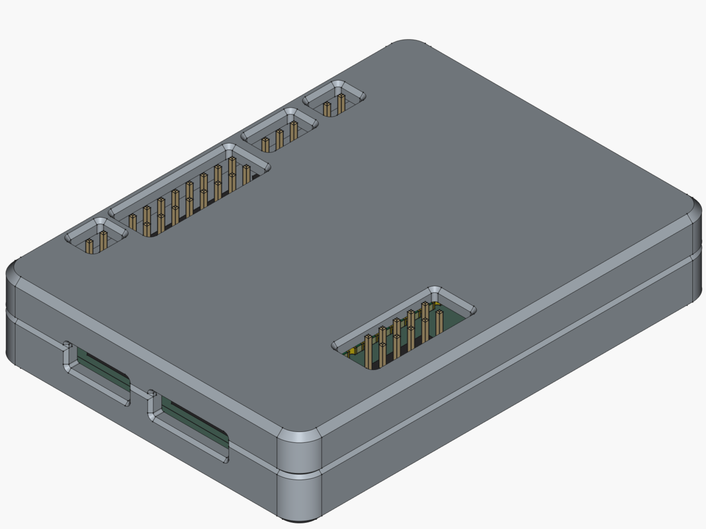

Introduction
Pico de Gallo is an open hardware design built around the Raspberry Pi Pico2 board that turns a Pico 2 into a versatile USB bridge for embedded development. It exposes the following interfaces to a host PC:
- I²C — read, write, write-read, bus scan, runtime frequency configuration, transaction batching
- SPI — read, write, transfer, flush, runtime mode/frequency configuration, transaction batching
- UART — read, write, flush, runtime baud/config changes
- GPIO — get, put, direction control, edge/level event subscription
- PWM — duty cycle control, enable/disable, frequency/config changes
- ADC — single-shot analog reads on 4 GPIO-based channels (12-bit)
- 1-Wire — bus reset, read, write, ROM search (PIO hardware)
The
pico-de-gallo-halcrate implements standard embedded-hal and embedded-hal-async traits, so existing device drivers work out of the box — no code changes needed.
A companion CLI application (gallo) provides interactive access to
every interface.
In the following chapters we will look at the Pico de Gallo ecosystem in detail: hardware assembly, the crate architecture, each supported interface, writing device drivers, and the FFI/C bindings.
The Hardware
At its most basic, Pico de Gallo is merely a landing board containing Pico 2 castelated pads where a Pico 2 can be soldered directly. This means that anything Pico de Gallo can do, can also be achieved without Pico de Gallo’s landing board; however, the landing board is a lot easier to work with, especially when it comes to tracking which pins the Firmware expects you to use.
The assembled landing board also contains headers which allows for connecting peripherals using DuPont wires.
You can get a feeling for how the board looks from the rendering below:

The Case
We also provide a 3D-printable (see below), snap-fit case where you can house your Pico de Gallo if you so desire. It’s entirely optional.

Getting Started
There are just a few steps needed in order to get a functioning Pico de Gallo on your hands:
- Fabricate the landing board
- Solder components
- Flash latest Firmware
We will look at the each in the following sections, but first we need to discuss materials and equipment needed to assemble a Pico de Gallo PCB.
Equipment and materials
- Soldering iron or soldering station
- Solder wire spool
- Soldering iron tip cleaner (either sponge or brass will work)
- Good quality no-clean liquid flux
- Raspberry pi Pico 2 board
- Pico de Gallo landing board
- ESD-safe cleaning brushes
- (Optional) PCB holder or helping hands
- (Optional) Soldering iron tip tinner
PCB Fabrication
There are several suitable PCB fabrication services which can consume our Gerbers and produce high quality PCBs delivered to your door. You are free to choose whichever your want.
DISCLAIMER: we are not responsible for anything related to PCB fabrication. Any costs, mistakes, damages associated with it are your responsibility.
Our gerbers are hosted in the Releases page for our Github repository. For convenience, here’s the link to the latest Gerber release at the time of this writing.
For most of these PCB fabrication services, you can just upload the
gerbers.zip file downloaded from our Hardware release above, select
your desired silk screen color, solder mask color, and surface finish
and place the order. Once the boards are ready, they should be mailed
to your door.
Soldering Components
Tip
Soldering takes practice. Before starting make sure you have all necessary equipment and materials around you and no unnecessary obstructions.
Make sure that the tip of your soldering iron touches both components being soldered together. That is, if you’re soldering the Pico 2 to the landing board, the iron tip should touch both the pico 2 and the landing board’s pad at the same time.
Let the area heat up for a couple seconds before introducing the solder wire.
When soldering, it’s wise to start with the lowest height components first. In the case of Pico de Gallo, that will be the Pico 2 itself.
Here are some of materials and equipment necessary:

Soldering the Pico 2
Place the Pico 2 onto the landing board aligning the edge of the Pico 2 board to the edge of the landing board as shown below:

Start by soldering one and only one corner pad:

This will allow you to reflow — that is, remelt — the solder and move the board around in case it doesn’t exactly align with the other pads.
Tip
Solder flux makes the process of soldering these components a lot easier. Grab some no-clean flux, spread around the pads and the solder will be pulled onto the pads by surface tension.
As it turns out, solder really likes to stick to exposed copper and truly despises solder mask.
Once you align the board correctly — see the example below —, you can move on to the opposite corner. This will help prevent any further movement during the remainder of the soldering process.

At this point you are ready to solder all remaining pads. The landing board and pico 2 should be strongly attached to one another as shown below:

Soldering right angle headers
Next, you should move on to the right angle headers. These a bit tricky to solder, but with some patience and, perhaps, a piece of Polyimide Electrical Tape — also known as Kapton Tape — to hold the headers while you solder, should make the process a little easier.
Similarly to how we soldered the pico 2 to the landing board, here, too, we want to solder one pin only and make sure everything remains aligned before proceeding. Below you can see the process as a sequence of images.


Finally, we can solder all the remaining headers as they are all the same height.
Soldering remaining headers
Once again, solder one pin on each header:

If any of them hardened crooked or not flush with the landing board, fix it before proceeding. Continue by soldering one more pin on the opposite corner of each header. Finish by soldering all remaining pins.

Finishing touches
Now is a good time to visually inspect the board. Make sure there are no bridged pins or pads — that is, no solder shorting any neighboring pins to each other — as that could cause unexpected problems if you were to plug the USB cable.
After verifying that the board looks correct, now is the time to scrub the excess flux residue off the board. This is achieved with ESD safe brushes and 99% Isopropyl Alcohol.
Caution
Isopropyl Alcohol (IPA) is highly flammable. Care should be taken to not inhale IPA fumes. Make sure you are in a well-ventilated area while cleaning the board with IPA.
IPA can also some dryness upon skin contact.
Flashing Firmware
With an assembled Pico de Gallo, the next step is to flash the
latest Firmware. In order to do so, we download the latest
firmware.uf2 from the Releases
page from our Github
repository. At
the time of this writing, that is Firmware
v0.5.0.
It’s very easy to update firmware on Pico de Gallo, simply:
- Insert the USB cable to pico 2’s micro-USB port
- Press and hold the
BOOTSELbutton - Insert the other end of the USB cable to an available USB port on your computer
A new USB drive named RP2350 should show on your computer. Simply
drag and drop the firmware.uf2 file to this new USB drive. Pico de
Gallo will automatically disconnect and reconnect with the new
Firmware.
Verifying Firmware Version
Finally, let’s verify that the firmware running on the device matches
our expectation. Grab the pico-de-gallo-app suitable for your host
Operating System from our
Releases
page. At the time of this writing, the latest version is Application
v0.5.0. We
currently support x86_64 and Aarch64 for both Windows and Linux,
and Aarch64 for macOS.
Once you have the correct binary, run the version command:
$ gallo version
Pico de Gallo FW v0.8.0
Schema v0.4.0
HW revision 1
Capabilities: I2C ✓ | SPI ✓ | UART ✓ | GPIO ✓ | PWM ✓ | ADC ✓ | 1-Wire ✓
Success 🎉. With this completed we can get familiarized with the other
parts of the Pico de Gallo ecosystem and write a driver for the
tmp102 temperature sensor.
Pin Map
The table below shows every function exposed by the firmware and the RP2350 GPIO it maps to. This is the authoritative pin assignment — refer to this when wiring peripherals.
| Function | GPIO | Notes |
|---|---|---|
| UART TX | GPIO 0 | Buffered, interrupt-driven |
| UART RX | GPIO 1 | |
| I²C SDA | GPIO 2 | 7-bit addressing, async DMA |
| I²C SCL | GPIO 3 | |
| SPI RX (MISO) | GPIO 4 | DMA-backed full-duplex |
| SPI SCK | GPIO 6 | |
| SPI TX (MOSI) | GPIO 7 | |
| GPIO 0 | GPIO 8 | Input/output/edge events |
| GPIO 1 | GPIO 9 | Input/output/edge events |
| GPIO 2 | GPIO 10 | Input/output/edge events |
| GPIO 3 | GPIO 11 | Input/output/edge events |
| PWM 0 | GPIO 12 | Slice 6 channel A |
| PWM 1 | GPIO 13 | Slice 6 channel B |
| PWM 2 | GPIO 14 | Slice 7 channel A |
| PWM 3 | GPIO 15 | Slice 7 channel B |
| 1-Wire | GPIO 16 | PIO0/SM0, open-drain |
| ADC 0 | GPIO 26 | 12-bit, 0–3.3 V nominal |
| ADC 1 | GPIO 27 | 12-bit |
| ADC 2 | GPIO 28 | 12-bit |
| ADC 3 | GPIO 29 | 12-bit |
Software Prerequisites
To use Pico de Gallo you need the gallo CLI application. Pre-built
binaries for Windows (x86_64, Aarch64), Linux (x86_64, Aarch64), and
macOS (Aarch64) are available on the
Releases page.
If you prefer to build from source:
- Install Rust (stable toolchain)
- Clone the repository:
git clone https://github.com/OpenDevicePartnership/pico-de-gallo - Build the CLI:
cd crates && cargo build --release -p gallo - The binary will be at
target/release/gallo(orgallo.exeon Windows)
USB Driver Notes
- Linux — you may need a udev rule to allow non-root access. Create
/etc/udev/rules.d/99-pico-de-gallo.ruleswith:
Then runSUBSYSTEM=="usb", ATTR{idVendor}=="045e", ATTR{idProduct}=="ffff", MODE="0666"sudo udevadm control --reload-rules && sudo udevadm trigger. - Windows — the device should be recognized automatically. If not, use Zadig to install the WinUSB driver.
- macOS — no additional drivers needed.
Gallo Crates
Pico de Gallo provides several different crates to provide a comfortable and ergonomic experience to its users. The most relevant crates are discussed below.
Gallo App
The gallo app’s main purpose is that of one-off, or batch-mode
communication with Pico de Gallo’s I2C, SPI, UART, GPIO, and PWM buses. The
built-in help text gives us a little more information.
$ gallo help
Access I2C/SPI devices through Pico De Gallo
Usage: gallo.exe [OPTIONS] [COMMAND]
Commands:
list List connected Pico de Gallo devices
version Get firmware version
i2c I2C access methods
spi SPI access methods
gpio GPIO access methods
uart UART access methods
pwm PWM control methods
adc ADC access methods
onewire 1-Wire bus access methods
help Print this message or the help of the given subcommand(s)
Options:
-s, --serial-number <SERIAL_NUMBER>
-h, --help Print help
-V, --version Print version
Listing Connected Devices
When multiple Pico de Gallo boards are connected, use the list
command to discover them:
$ gallo list
Serial Number Bus Address
E6633861A34B8C24 2 14
E6633861A34B9F17 1 8
If you have more than one Pico de Gallo attached to your host
computer, the gallo app will always attempt to use the first device
it finds. Because that’s non-deterministic, you can specify the exact
device you want by using the -s, --serial-number option.
Additionally, as noted in the help text itself, we can request for help from a specific command, for example:
$ gallo i2c help
I2C access methods
Usage: gallo.exe i2c [COMMAND]
Commands:
scan Scan I2C bus for existing devices
read Read bytes through the I2C bus from device at given address
write Write bytes through I2C bus to device at given address
write-read Write bytes followed by read bytes
set-config Set I2C bus configuration (frequency)
get-config Get current I2C bus configuration
batch Execute multiple I2C operations in a single transfer
help Print this message or the help of the given subcommand(s)
Options:
-h, --help Print help
Communicating via I2C
The i2c subcommand groups all I2C functionality. We
support a regular read, write, and write-read
operation. Additionally, a dedicated scan endpoint probes all
addresses in a single USB round-trip.
Scanning
Warning
Due to limitations on the I2C controller HW present on the RP235x MCU, scanning must be carried with read probing. That is, Pico de Gallo will intiate a 1-byte read from each and every address on the bus. Those which respond are considered present.
This could result in unexpected side-effects on some I2C devices which could put the device in an unknown state afterwards.
If you have one or more I2C devices attached to Pico de
Gallo and would like to discover their addresses, you can use the
scan facility.
$ gallo i2c scan
╭────┬────┬────┬────┬────┬────┬────┬────┬────┬────┬────┬────┬────┬────┬────┬────┬────╮
│ │ 0 │ 1 │ 2 │ 3 │ 4 │ 5 │ 6 │ 7 │ 8 │ 9 │ a │ b │ c │ d │ e │ f │
├────┼────┼────┼────┼────┼────┼────┼────┼────┼────┼────┼────┼────┼────┼────┼────┼────┤
│ 0 │ RR │ RR │ RR │ RR │ RR │ RR │ RR │ RR │ -- │ -- │ -- │ -- │ -- │ -- │ -- │ -- │
│ 1 │ -- │ -- │ -- │ -- │ -- │ -- │ -- │ -- │ -- │ -- │ -- │ -- │ -- │ -- │ -- │ -- │
│ 2 │ -- │ -- │ -- │ -- │ -- │ -- │ -- │ -- │ -- │ -- │ -- │ -- │ -- │ -- │ -- │ -- │
│ 3 │ -- │ -- │ -- │ -- │ -- │ -- │ -- │ -- │ -- │ -- │ -- │ -- │ -- │ -- │ -- │ -- │
│ 4 │ -- │ -- │ -- │ -- │ -- │ -- │ -- │ -- │ -- │ -- │ -- │ -- │ -- │ -- │ -- │ -- │
│ 5 │ -- │ -- │ -- │ -- │ -- │ -- │ -- │ -- │ -- │ -- │ -- │ -- │ -- │ -- │ -- │ -- │
│ 6 │ -- │ -- │ -- │ -- │ -- │ -- │ -- │ -- │ 68 │ -- │ -- │ -- │ -- │ -- │ -- │ -- │
│ 7 │ -- │ -- │ -- │ -- │ -- │ -- │ -- │ -- │ RR │ RR │ RR │ RR │ RR │ RR │ RR │ RR │
╰────┴────┴────┴────┴────┴────┴────┴────┴────┴────┴────┴────┴────┴────┴────┴────┴────╯
The RR annotation here means that those addresses are reserved and
shouldn’t be accessed. You can request Pico de Gallo to access them
anyway by passing the -r argument.
$ gallo i2c scan -r
╭────┬────┬────┬────┬────┬────┬────┬────┬────┬────┬────┬────┬────┬────┬────┬────┬────╮
│ │ 0 │ 1 │ 2 │ 3 │ 4 │ 5 │ 6 │ 7 │ 8 │ 9 │ a │ b │ c │ d │ e │ f │
├────┼────┼────┼────┼────┼────┼────┼────┼────┼────┼────┼────┼────┼────┼────┼────┼────┤
│ 0 │ -- │ -- │ -- │ -- │ -- │ -- │ -- │ -- │ -- │ -- │ -- │ -- │ -- │ -- │ -- │ -- │
│ 1 │ -- │ -- │ -- │ -- │ -- │ -- │ -- │ -- │ -- │ -- │ -- │ -- │ -- │ -- │ -- │ -- │
│ 2 │ -- │ -- │ -- │ -- │ -- │ -- │ -- │ -- │ -- │ -- │ -- │ -- │ -- │ -- │ -- │ -- │
│ 3 │ -- │ -- │ -- │ -- │ -- │ -- │ -- │ -- │ -- │ -- │ -- │ -- │ -- │ -- │ -- │ -- │
│ 4 │ -- │ -- │ -- │ -- │ -- │ -- │ -- │ -- │ -- │ -- │ -- │ -- │ -- │ -- │ -- │ -- │
│ 5 │ -- │ -- │ -- │ -- │ -- │ -- │ -- │ -- │ -- │ -- │ -- │ -- │ -- │ -- │ -- │ -- │
│ 6 │ -- │ -- │ -- │ -- │ -- │ -- │ -- │ -- │ 68 │ -- │ -- │ -- │ -- │ -- │ -- │ -- │
│ 7 │ -- │ -- │ -- │ -- │ -- │ -- │ -- │ -- │ -- │ -- │ -- │ -- │ -- │ -- │ -- │ -- │
╰────┴────┴────┴────┴────┴────┴────┴────┴────┴────┴────┴────┴────┴────┴────┴────┴────╯
Reading
Reading requires the target device address — you can find that
out with scan — and a count of how many bytes you want to
read.
$ gallo i2c read --address 0x68 -c 10
85 7f 00 51 bd 2c eb 22 fb 8f
Writing
Similarly, writing requires the target device address. However,
instead of a count of bytes to read, writing wants the bytes to be
written.
$ gallo i2c write --address 0x68 --bytes 0x00 0x01 0x02 0x03 0x04
Write-Then-Read
It’s the same as writing followed by reading.
$ gallo i2c write-read --address 0x68 --bytes 0x00 -c 10
85 7f 00 51 bd 2c eb 22 fb 8f
Communicating via SPI
Exactly the same as I2C but without the extra address
option.
$ gallo spi help
SPI access methods
Usage: gallo.exe spi [COMMAND]
Commands:
read Read bytes through SPI bus
write Write bytes through SPI bus
transfer Full-duplex SPI transfer
write-read Write bytes followed by read bytes
set-config Set SPI bus configuration (frequency, phase, polarity)
get-config Get current SPI bus configuration
batch Execute multiple SPI operations atomically under chip-select
help Print this message or the help of the given subcommand(s)
Options:
-h, --help Print help
Reading
$ gallo spi read --count 10
00 00 00 00 00 00 00 00 00 00
Writing
$ gallo spi write --bytes 0x00 0x01 0x02 0x03 0x04 0x05
Full-Duplex Transfer
A true full-duplex SPI transfer that simultaneously transmits and receives:
$ gallo spi transfer --bytes 0x01 0x02 0x03 0x04
00 00 00 00
Write-Then-Read
$ gallo spi write-read --bytes 0x00 0x01 0x02 0x03 0x04 0x05 --count 10
00 00 00 00 00 00 00 00 00 00
Output Formats
Read operations (both I2C and SPI) support three output
formats via the -f / --format flag:
hex(default): hexadecimal byte dumpbinary: raw bytes written to stdoutascii: printable characters shown, non-printable replaced with.
$ gallo i2c read --address 0x68 -c 10 -f ascii
..Q.,...
Gallo Lib
The library implements a series of methods to communicate with the Pico de Gallo device, in fact the app described in the previous chapter relies on the library for much of its functionality.
We are given two public constructors for Pico de Gallo devices:
new(): attempts to find a Pico de Gallo and opens a connection to the first one it finds;new_with_serial_number(): attempts to find a Pico de Gallo with the given serial number and opens a connection to it.
Because serial numbers are guaranteed to be unique,
new_with_serial_number() will always find the exact device you’re
looking for if that is connected to your host computer.
Once a connection is successfully initiated, we get access to all endpoints exposed by the firmware. The table below provides a summary.
| Endpoint | Arguments | Descrition |
|---|---|---|
ping | id | Sends the id to Pico de Gallo and waits for a response. |
i2c_read | address, count | Attempts to read count bytes from the I2C device at address |
i2c_write | address, contents | Attempts to write contents to the I2C device at address |
i2c_scan | include_reserved | Scans the I2C bus and returns responding addresses |
spi_read | count | Attempts to read count bytes via SPI |
spi_write | contents | Attempts to write contents via SPI |
spi_transfer | contents | Full-duplex SPI transfer (simultaneous TX and RX) |
spi_flush | Flushes the SPI bus | |
gpio_get | pin | Reads the current state of the GPIO #pin |
gpio_put | pin, state | Sets the state of GPIO #pin to state |
gpio_wait_for_high | pin | Waits until GPIO #pin reaches a high state |
gpio_wait_for_low | pin | Waits until GPIO #pin reaches a low state |
gpio_wait_for_rising_edge | pin | Waits until a rising edge is seen on GPIO #pin |
gpio_wait_for_falling_edge | pin | Waits until a falling edge is seen on GPIO #pin |
gpio_wait_for_any_edge | pin | Waits until any edge is seen on GPIO #pin |
gpio_set_config | pin, direction (Input/Output), pull (None/Up/Down) | Configures GPIO #pin direction and pull resistor. Enters explicit mode. |
gpio_subscribe | pin, edge (Rising/Falling/Any) | Subscribes to edge events on GPIO #pin. Pin becomes monitored. |
gpio_unsubscribe | pin | Unsubscribes from edge events on GPIO #pin. Pin returns to normal. |
subscribe_gpio_events | depth | Opens a topic subscription for GpioEvent messages from the device. |
i2c_set_config | frequency (Standard/Fast/FastPlus) | Sets I2C bus clock frequency |
spi_set_config | spi_frequency, spi_phase, spi_polarity | Sets SPI bus clock frequency, phase, and polarity |
i2c_get_config | Returns the active I2C bus configuration (frequency) | |
spi_get_config | Returns the active SPI bus configuration (frequency, phase, polarity) | |
version | Reads the current Firmware version from Pico de Gallo | |
device_info | Reads firmware version, schema version, HW revision, and capabilities | |
validate | Queries device info and checks schema version compatibility | |
uart_read | count, timeout_ms | Reads up to count bytes from UART with timeout (0 = non-blocking) |
uart_write | contents | Writes contents to the UART transmit buffer |
uart_flush | Flushes the UART transmit buffer | |
uart_set_config | baud_rate | Sets the UART baud rate (must be > 0) |
uart_get_config | Returns the active UART configuration (baud rate) | |
adc_read | channel (AdcChannel enum) | Reads a single 12-bit sample from the given ADC channel |
adc_get_config | Returns the ADC configuration (resolution, reference, channels) | |
i2c_batch | address, ops (encoded byte stream) | Executes multiple I2C operations in a single USB transfer |
spi_batch | cs_pin, ops (encoded byte stream) | Executes multiple SPI operations atomically under chip-select |
onewire_reset | Resets the 1-Wire bus and detects device presence | |
onewire_read | len | Reads N bytes from the 1-Wire bus |
onewire_write | data | Writes raw bytes to the 1-Wire bus |
onewire_write_pullup | data, pullup_duration_ms | Writes bytes then applies strong pullup for parasitic-power devices |
onewire_search | Starts a new ROM search and returns the first device | |
onewire_search_next | Continues the current ROM search | |
pwm_set_duty_cycle | channel, duty | Sets the duty cycle for PWM channel |
pwm_get_duty_cycle | channel | Returns the current and maximum duty cycle |
pwm_enable | channel | Enables a PWM channel |
pwm_disable | channel | Disables a PWM channel |
pwm_set_config | channel, frequency_hz, phase_correct | Configures PWM frequency and phase-correct mode |
pwm_get_config | channel | Returns the active PWM configuration |
i2c_write_read | address, contents, count | Writes bytes then reads from the same I²C address (repeated start) |
list_devices | Lists all connected Pico de Gallo devices (static method) | |
wait_closed | Waits until the USB connection is closed |
Gallo Hal
pico-de-gallo-hal implements all embedded-hal and
embedded-hal-async traits. Because of that, we can write peripheral
drivers polymorphic on those traits and easily test them without
having to setup an entire MCU platform. That is, we can skip linker
scripts, probe-rs, clock configuration, pin mux configuration, and a
lot more by relying on Pico de Gallo to do the heavy-lifting.
To clarify what we mean, a driver crate would add
pico-de-gallo-hal as a dev dependency and use it for tests and
examples.
Implemented Traits
| Peripheral | Blocking Trait | Async Trait |
|---|---|---|
| GPIO | OutputPin, InputPin, StatefulOutputPin | Wait |
| I2C | I2c | I2c |
| SPI | SpiBus, SpiDevice | SpiBus, SpiDevice |
| UART | embedded_io::Read, embedded_io::Write | embedded_io_async::Read, embedded_io_async::Write |
| PWM | SetDutyCycle | — |
| Delay | DelayNs | DelayNs |
Additional handle types that don’t map to standard traits:
| Type | Description |
|---|---|
OneWire | 1-Wire bus operations (reset, read, write, ROM search) |
Adc | ADC reads and configuration (via Hal::adc_read(), Hal::adc_get_config()) |
Note:
SpiDevicemanages chip-select (CS) automatically via a GPIO pin. Usehal.spi_device(cs_pin)to create anSpiDevicehandle. For raw bus access without CS management, usehal.spi().
Here’s a minimalistic example of how to use pico-de-gallo-hal to
communicate with an I2C device.
use embedded_hal::i2c::I2c;
use pico_de_gallo_hal::Hal;
struct Driver<I2C: I2c>;
fn main() {
let hal = Hal::new();
let i2c = hal.i2c();
let delay = hal.delay();
let mut drv = Driver::new(i2c, delay);
println!("Device ID: {:02x}", drv.read_manufacturer_id());
}GPIO
Pico de Gallo exposes 4 general-purpose I/O pins (GPIO 0–3) mapped to RP2350 GPIO 8–11. These pins are shared with the Logic Capture channels 0–3 — when a capture session is active, the corresponding GPIO pins are unavailable for normal GPIO operations.
Pin Mapping
| Gallo Pin | RP2350 GPIO | Logic Capture Channel |
|---|---|---|
| 0 | 8 | Channel 0 |
| 1 | 9 | Channel 1 |
| 2 | 10 | Channel 2 |
| 3 | 11 | Channel 3 |
Operations
| Operation | Description |
|---|---|
| Get | Read the current pin state (High or Low) |
| Put | Drive a pin High or Low |
| Set Config | Configure pin direction (input/output) and pull resistor (none/up/down) |
| Monitor | Subscribe to edge events on a pin (rising, falling, or any) |
Pin Configuration
Before using a GPIO pin, configure its direction and pull resistor. Pins default to input with no pull resistor after power-on.
CLI
# Configure pin 0 as input with pull-up
gallo gpio set-config --pin 0 --direction input --pull up
# Configure pin 2 as output with no pull
gallo gpio set-config --pin 2 --direction output --pull none
Rust Library
#![allow(unused)]
fn main() {
use pico_de_gallo_lib::{PicoDeGallo, GpioDirection, GpioPull};
fn configure_pins(gallo: &PicoDeGallo) {
// Configure pin 0 as input with pull-up
smol::block_on(async {
gallo
.gpio_set_config(0, GpioDirection::Input, GpioPull::Up)
.await
.unwrap();
// Configure pin 2 as output with no pull
gallo
.gpio_set_config(2, GpioDirection::Output, GpioPull::None)
.await
.unwrap();
});
}
}C (FFI)
#include "pico_de_gallo.h"
void configure_pins(PicoDeGallo *gallo) {
/* Configure pin 0 as input with pull-up */
GalloStatus rc = gallo_gpio_set_config(
gallo, 0, GpioDirection_Input, GpioPull_Up
);
if (rc != GalloStatus_Ok) {
fprintf(stderr, "set-config failed: %d\n", rc);
}
/* Configure pin 2 as output with no pull */
gallo_gpio_set_config(gallo, 2, GpioDirection_Output, GpioPull_None);
}
Reading and Writing Pins
CLI
# Read the state of pin 0
gallo gpio get --pin 0
# Output: Pin 0: High
# Drive pin 2 high
gallo gpio put --pin 2 --high
# Drive pin 2 low
gallo gpio put --pin 2 --high false
Rust Library
#![allow(unused)]
fn main() {
use pico_de_gallo_lib::{PicoDeGallo, GpioState};
async fn read_write(gallo: &PicoDeGallo) {
// Read pin 0
let state = gallo.gpio_get(0).await.unwrap();
println!("Pin 0 is {:?}", state);
// Drive pin 2 high
gallo.gpio_put(2, GpioState::High).await.unwrap();
// Drive pin 2 low
gallo.gpio_put(2, GpioState::Low).await.unwrap();
}
}C (FFI)
#include "pico_de_gallo.h"
#include <stdio.h>
void read_write(PicoDeGallo *gallo) {
/* Read pin 0 */
bool high;
GalloStatus rc = gallo_gpio_get(gallo, 0, &high);
if (rc == GalloStatus_Ok) {
printf("Pin 0: %s\n", high ? "High" : "Low");
}
/* Drive pin 2 high */
gallo_gpio_put(gallo, 2, true);
/* Drive pin 2 low */
gallo_gpio_put(gallo, 2, false);
}
Waiting for Pin State Changes
The library provides async methods that block until a pin reaches the requested state or edge transition. These are useful for waiting on external signals without polling.
Rust Library
#![allow(unused)]
fn main() {
use pico_de_gallo_lib::PicoDeGallo;
async fn wait_for_button(gallo: &PicoDeGallo) {
// Wait until pin 1 goes high
gallo.gpio_wait_for_high(1).await.unwrap();
println!("Pin 1 is now high");
// Wait until pin 1 goes low
gallo.gpio_wait_for_low(1).await.unwrap();
println!("Pin 1 is now low");
// Wait for a rising edge on pin 1
gallo.gpio_wait_for_rising_edge(1).await.unwrap();
println!("Rising edge detected on pin 1");
// Wait for a falling edge on pin 1
gallo.gpio_wait_for_falling_edge(1).await.unwrap();
println!("Falling edge detected on pin 1");
// Wait for any edge on pin 1
gallo.gpio_wait_for_any_edge(1).await.unwrap();
println!("Edge detected on pin 1");
}
}C (FFI)
#include "pico_de_gallo.h"
#include <stdio.h>
void wait_for_button(PicoDeGallo *gallo) {
/* These calls block until the requested edge/state occurs */
gallo_gpio_wait_for_high(gallo, 1);
printf("Pin 1 is now high\n");
gallo_gpio_wait_for_low(gallo, 1);
printf("Pin 1 is now low\n");
gallo_gpio_wait_for_rising_edge(gallo, 1);
printf("Rising edge detected on pin 1\n");
gallo_gpio_wait_for_falling_edge(gallo, 1);
printf("Falling edge detected on pin 1\n");
gallo_gpio_wait_for_any_edge(gallo, 1);
printf("Edge detected on pin 1\n");
}
Edge Event Monitoring
For continuous monitoring, subscribe to GPIO edge events on a pin. The
firmware streams GpioEvent structs to the host whenever the subscribed
edge is detected. Each event carries:
pub struct GpioEvent {
pub pin: u8,
pub edge: GpioEdge,
pub state: GpioState,
pub timestamp_us: u64,
}pin— the Gallo pin number (0–3)edge— the edge that triggered the event (RisingorFalling)state— the pin state after the edgetimestamp_us— firmware timestamp in microseconds
CLI
The monitor subcommand subscribes to edge events and prints them until
you press Ctrl+C:
# Monitor rising edges on pin 0
gallo gpio monitor --pin 0 --edge rising
# Monitor any edge on pin 1
gallo gpio monitor --pin 1 --edge any
Example output:
[ 12345 µs] Pin 0: Rising → High
[ 12890 µs] Pin 0: Rising → High
[ 45012 µs] Pin 0: Rising → High
^C
Unsubscribed from pin 0.
Rust Library
#![allow(unused)]
fn main() {
use pico_de_gallo_lib::{PicoDeGallo, GpioEdge};
async fn monitor_pin(gallo: &PicoDeGallo) {
// Subscribe to rising edges on pin 0
gallo.gpio_subscribe(0, GpioEdge::Rising).await.unwrap();
// Open a subscription to receive GpioEvent values (buffer depth 16)
let mut sub = gallo.subscribe_gpio_events(16).await.unwrap();
// Process events
for _ in 0..100 {
let event = sub.recv().await.unwrap();
println!(
"[{:>8} µs] Pin {}: {:?} → {:?}",
event.timestamp_us, event.pin, event.edge, event.state
);
}
// Unsubscribe when done
gallo.gpio_unsubscribe(0).await.unwrap();
}
}C (FFI)
#include "pico_de_gallo.h"
#include <stdio.h>
void monitor_pin(PicoDeGallo *gallo) {
/* Subscribe to rising edges on pin 0 */
gallo_gpio_subscribe(gallo, 0, GpioEdge_Rising);
/* ... receive events via topic subscription API ... */
/* Unsubscribe when done */
gallo_gpio_unsubscribe(gallo, 0);
}
HAL Usage
The pico-de-gallo-hal crate implements the standard embedded-hal
traits over the GPIO pins, providing a familiar interface for portable
device drivers.
Blocking Traits
The HAL implements these blocking traits from embedded-hal:
OutputPin—set_high()/set_low()InputPin—is_high()/is_low()StatefulOutputPin—is_set_high()/is_set_low()
#![allow(unused)]
fn main() {
use embedded_hal::digital::{InputPin, OutputPin, StatefulOutputPin};
use pico_de_gallo_hal::Hal;
fn blink_and_read(hal: &Hal) {
let mut led = hal.output_pin(2);
let button = hal.input_pin(0);
// Drive pin 2 high
led.set_high().unwrap();
// Read pin 0
if button.is_high().unwrap() {
println!("Button pressed");
}
// Check what we're currently driving
if led.is_set_high().unwrap() {
println!("LED is on");
}
led.set_low().unwrap();
}
}Async Trait
The HAL implements the embedded-hal-async Wait trait for
non-blocking edge/level detection:
#![allow(unused)]
fn main() {
use embedded_hal_async::digital::Wait;
use pico_de_gallo_hal::Hal;
async fn wait_for_signal(hal: &Hal) {
let mut pin = hal.input_pin(1);
pin.wait_for_high().await.unwrap();
println!("Pin went high");
pin.wait_for_rising_edge().await.unwrap();
println!("Rising edge detected");
}
}Complete Example: Button-Controlled LED
This example configures pin 0 as an input (button with pull-up) and pin 2 as an output (LED). It toggles the LED on each button press.
CLI
# Configure pins
gallo gpio set-config --pin 0 --direction input --pull up
gallo gpio set-config --pin 2 --direction output --pull none
# Read button, toggle LED manually
STATE=$(gallo gpio get --pin 0)
gallo gpio put --pin 2 --high
# Or monitor button presses
gallo gpio monitor --pin 0 --edge falling
Rust Library
#![allow(unused)]
fn main() {
use pico_de_gallo_lib::{
PicoDeGallo, GpioDirection, GpioPull, GpioState, GpioEdge,
PicoDeGalloError, GpioError,
};
async fn button_led() -> Result<(), PicoDeGalloError<GpioError>> {
let gallo = PicoDeGallo::new();
// Configure pin 0 as input with pull-up (button)
gallo.gpio_set_config(0, GpioDirection::Input, GpioPull::Up).await?;
// Configure pin 2 as output (LED)
gallo.gpio_set_config(2, GpioDirection::Output, GpioPull::None).await?;
let mut led_on = false;
loop {
// Wait for button press (falling edge because of pull-up)
gallo.gpio_wait_for_falling_edge(0).await?;
led_on = !led_on;
let state = if led_on { GpioState::High } else { GpioState::Low };
gallo.gpio_put(2, state).await?;
}
}
}C (FFI)
#include "pico_de_gallo.h"
#include <stdbool.h>
int button_led(void) {
PicoDeGallo *gallo = gallo_new();
if (!gallo) return -1;
/* Configure pin 0 as input with pull-up (button) */
gallo_gpio_set_config(gallo, 0, GpioDirection_Input, GpioPull_Up);
/* Configure pin 2 as output (LED) */
gallo_gpio_set_config(gallo, 2, GpioDirection_Output, GpioPull_None);
bool led_on = false;
for (;;) {
/* Wait for button press (falling edge) */
gallo_gpio_wait_for_falling_edge(gallo, 0);
led_on = !led_on;
gallo_gpio_put(gallo, 2, led_on);
}
return 0;
}
Error Handling
All GPIO operations return errors through the standard PicoDeGalloError
wrapper. GPIO-specific errors are represented as
PicoDeGalloError<GpioError>:
#![allow(unused)]
fn main() {
use pico_de_gallo_lib::{PicoDeGallo, PicoDeGalloError, GpioError, GpioState};
async fn safe_read(gallo: &PicoDeGallo) {
match gallo.gpio_get(0).await {
Ok(state) => println!("Pin 0: {:?}", state),
Err(PicoDeGalloError::Rpc(e)) => {
eprintln!("RPC error: {e:?}");
}
Err(PicoDeGalloError::Endpoint(gpio_err)) => {
eprintln!("GPIO error: {gpio_err:?}");
}
Err(e) => {
eprintln!("Other error: {e:?}");
}
}
}
}API Reference
Lib Methods
All methods are async and available on PicoDeGallo:
| Method | Returns | Description |
|---|---|---|
gpio_get(pin: u8) | Result<GpioState, ...> | Read pin state |
gpio_put(pin: u8, state: GpioState) | Result<(), ...> | Set pin state |
gpio_set_config(pin, direction, pull) | Result<(), ...> | Configure direction and pull |
gpio_wait_for_high(pin: u8) | Result<(), ...> | Wait until pin is high |
gpio_wait_for_low(pin: u8) | Result<(), ...> | Wait until pin is low |
gpio_wait_for_rising_edge(pin: u8) | Result<(), ...> | Wait for low→high transition |
gpio_wait_for_falling_edge(pin: u8) | Result<(), ...> | Wait for high→low transition |
gpio_wait_for_any_edge(pin: u8) | Result<(), ...> | Wait for any transition |
gpio_subscribe(pin: u8, edge: GpioEdge) | Result<(), ...> | Subscribe to edge events on a pin |
gpio_unsubscribe(pin: u8) | Result<(), ...> | Unsubscribe from edge events |
subscribe_gpio_events(depth) | Result<Subscription<GpioEvent>, ...> | Open a subscription to receive GPIO events |
FFI Functions
All functions return GalloStatus:
| Function | Description |
|---|---|
gallo_gpio_get(gallo, pin, out_high) | Read pin state into *out_high |
gallo_gpio_put(gallo, pin, high) | Set pin state |
gallo_gpio_set_config(gallo, pin, direction, pull) | Configure direction and pull |
gallo_gpio_wait_for_high(gallo, pin) | Block until pin is high |
gallo_gpio_wait_for_low(gallo, pin) | Block until pin is low |
gallo_gpio_wait_for_rising_edge(gallo, pin) | Block until rising edge |
gallo_gpio_wait_for_falling_edge(gallo, pin) | Block until falling edge |
gallo_gpio_wait_for_any_edge(gallo, pin) | Block until any edge |
gallo_gpio_subscribe(gallo, pin, edge) | Subscribe to edge events |
gallo_gpio_unsubscribe(gallo, pin) | Unsubscribe from edge events |
CLI Commands
| Command | Description |
|---|---|
gallo gpio get --pin N | Read pin state |
gallo gpio put --pin N --high | Drive pin high |
gallo gpio put --pin N --high false | Drive pin low |
gallo gpio set-config --pin N --direction DIR --pull PULL | Configure pin |
gallo gpio monitor --pin N --edge EDGE | Stream edge events until Ctrl+C |
Limitations
- 4 pins only — GPIO 0–3 (RP2350 GPIO 8–11).
- Shared with Logic Capture — pins used by an active capture session cannot be used for GPIO operations. They are returned automatically when capture stops.
- No analog — all pins are digital only.
- Edge event timestamps come from the firmware’s microsecond timer, not the host clock. Events are timestamped when the edge is detected on the RP2350.
UART
Pico de Gallo provides UART support through the RP2350’s hardware UART0 peripheral. The TX pin is on GPIO 0 and RX is on GPIO 1. The UART is buffered and interrupt-driven, so reads and writes do not block the firmware’s main loop.
Operations
| Operation | Description |
|---|---|
| Read | Reads up to N bytes from the receive buffer with an optional timeout |
| Write | Writes raw bytes to the transmit buffer |
| Flush | Flushes the transmit buffer, blocking until all bytes are sent |
| Set Config | Updates the baud rate (and future line parameters) |
| Get Config | Returns the current UART configuration |
Loopback Example
The simplest way to verify UART operation is a loopback test: connect GPIO 0 (TX) directly to GPIO 1 (RX) with a jumper wire. Everything you write will be received back.
CLI
# 1. Check the current configuration
gallo uart get-config
# 2. Set baud rate to 115200 (default)
gallo uart set-config --baud-rate 115200
# 3. Write "Hello" (ASCII bytes)
gallo uart write --bytes 0x48 0x65 0x6C 0x6C 0x6F
# 4. Read back 5 bytes with a 100ms timeout
gallo uart read --count 5 --timeout 100
# 5. Flush the transmit buffer
gallo uart flush
Rust Library
#![allow(unused)]
fn main() {
use pico_de_gallo_lib::PicoDeGallo;
async fn uart_loopback(gallo: &PicoDeGallo) {
// Configure baud rate
gallo.uart_set_config(115_200).await.unwrap();
// Verify configuration
let config = gallo.uart_get_config().await.unwrap();
println!("Baud rate: {}", config.baud_rate);
// Write "Hello"
gallo.uart_write(&[0x48, 0x65, 0x6C, 0x6C, 0x6F]).await.unwrap();
// Flush to ensure all bytes are transmitted
gallo.uart_flush().await.unwrap();
// Read back with 100ms timeout
let data = gallo.uart_read(5, 100).await.unwrap();
assert_eq!(&data, &[0x48, 0x65, 0x6C, 0x6C, 0x6F]);
println!("Received: {:?}", String::from_utf8_lossy(&data));
}
}C (FFI)
#include "pico_de_gallo.h"
#include <stdio.h>
#include <string.h>
void uart_loopback(PicoDeGallo *gallo) {
/* Configure baud rate */
GalloStatus rc = gallo_uart_set_config(gallo, 115200);
if (rc != GALLO_STATUS_OK) {
fprintf(stderr, "set-config failed: %d\n", rc);
return;
}
/* Read back current config */
GalloUartConfigurationInfo info;
rc = gallo_uart_get_config(gallo, &info);
if (rc != GALLO_STATUS_OK) {
fprintf(stderr, "get-config failed: %d\n", rc);
return;
}
printf("Baud rate: %u\n", info.baud_rate);
/* Write "Hello" */
uint8_t tx[] = {0x48, 0x65, 0x6C, 0x6C, 0x6F};
rc = gallo_uart_write(gallo, tx, sizeof(tx));
if (rc != GALLO_STATUS_OK) {
fprintf(stderr, "write failed: %d\n", rc);
return;
}
/* Flush */
gallo_uart_flush(gallo);
/* Read back */
uint8_t rx[5];
uint16_t out_read;
rc = gallo_uart_read(gallo, rx, sizeof(rx), 100, &out_read);
if (rc != GALLO_STATUS_OK) {
fprintf(stderr, "read failed: %d\n", rc);
return;
}
printf("Received %u bytes: %.*s\n", out_read, out_read, rx);
}
HAL
The HAL layer implements the standard embedded_io and embedded_io_async
traits, so the UART can be used with any driver that accepts generic
readers or writers.
Blocking — embedded_io::Read + embedded_io::Write:
#![allow(unused)]
fn main() {
use embedded_io::{Read, Write};
use pico_de_gallo_hal::Hal;
fn uart_loopback_blocking(hal: &Hal) {
let mut uart = hal.uart();
// Write "Hello"
uart.write_all(&[0x48, 0x65, 0x6C, 0x6C, 0x6F]).unwrap();
uart.flush().unwrap();
// Read back
let mut buf = [0u8; 5];
uart.read_exact(&mut buf).unwrap();
assert_eq!(&buf, b"Hello");
}
}Async — embedded_io_async::Read + embedded_io_async::Write:
#![allow(unused)]
fn main() {
use embedded_io_async::{Read, Write};
use pico_de_gallo_hal::Hal;
async fn uart_loopback_async(hal: &Hal) {
let mut uart = hal.uart_async();
uart.write_all(&[0x48, 0x65, 0x6C, 0x6C, 0x6F]).await.unwrap();
uart.flush().await.unwrap();
let mut buf = [0u8; 5];
uart.read_exact(&mut buf).await.unwrap();
assert_eq!(&buf, b"Hello");
}
}Connecting an External Device
To communicate with an external UART device (e.g., a GPS module or microcontroller), connect:
Pico de Gallo External Device
────────────── ───────────────
GPIO 0 (TX) ────────── RX
GPIO 1 (RX) ────────── TX
GND ────────────────── GND
Note
Cross the TX/RX lines: the transmit pin of one device connects to the receive pin of the other.
Non-blocking Read
A timeout of 0 performs a non-blocking read — it returns immediately with whatever bytes are already in the receive buffer (possibly none):
# Non-blocking: return whatever is buffered right now
gallo uart read --count 64 --timeout 0
#![allow(unused)]
fn main() {
use pico_de_gallo_lib::PicoDeGallo;
async fn drain_buffer(gallo: &PicoDeGallo) -> Vec<u8> {
// timeout_ms = 0 → non-blocking
gallo.uart_read(64, 0).await.unwrap()
}
}Error Handling
UART operations return PicoDeGalloError<UartError> on failure. The
UartError variants cover both protocol-level and configuration errors:
| Variant | Description |
|---|---|
BufferTooLong | Requested read/write exceeds the firmware buffer size |
Overrun | Receive buffer overflowed before host read the data |
Break | Break condition detected on the line |
Parity | Parity check failed |
Framing | Invalid stop bit detected |
InvalidBaudRate | Requested baud rate is out of range or unsupported |
Other | Catch-all for unexpected firmware errors |
API Reference
Lib Methods
All methods are async and available on PicoDeGallo:
| Method | Signature |
|---|---|
uart_read | uart_read(count: u16, timeout_ms: u32) -> Result<Vec<u8>, PicoDeGalloError<UartError>> |
uart_write | uart_write(contents: &[u8]) -> Result<(), PicoDeGalloError<UartError>> |
uart_flush | uart_flush() -> Result<(), PicoDeGalloError<UartError>> |
uart_set_config | uart_set_config(baud_rate: u32) -> Result<(), PicoDeGalloError<UartError>> |
uart_get_config | uart_get_config() -> Result<UartConfigurationInfo, PicoDeGalloError<UartError>> |
Note
PicoDeGallo::new()is not async. Only the peripheral methods listed above are async.
FFI Functions
All FFI functions return a GalloStatus code:
GalloStatus gallo_uart_read(PicoDeGallo *gallo,
uint8_t *buf, uint16_t buf_len,
uint32_t timeout_ms, uint16_t *out_read);
GalloStatus gallo_uart_write(PicoDeGallo *gallo,
const uint8_t *buf, uint16_t len);
GalloStatus gallo_uart_flush(PicoDeGallo *gallo);
GalloStatus gallo_uart_set_config(PicoDeGallo *gallo, uint32_t baud_rate);
GalloStatus gallo_uart_get_config(PicoDeGallo *gallo,
GalloUartConfigurationInfo *out_info);
CLI Commands
gallo uart read --count <N> --timeout <MS>
gallo uart write --bytes <BYTE>...
gallo uart flush
gallo uart set-config --baud-rate <RATE>
gallo uart get-config
Pin Mapping
| Function | GPIO | RP2350 Peripheral |
|---|---|---|
| TX | 0 | UART0 TX |
| RX | 1 | UART0 RX |
PWM
Pico de Gallo provides 4 PWM output channels through the RP2350’s hardware PWM slices. Each channel maps to a specific GPIO pin and slice/channel combination.
Pin Mapping
| PWM Channel | GPIO | Slice | Slice Channel |
|---|---|---|---|
| 0 | 12 | 6 | A |
| 1 | 13 | 6 | B |
| 2 | 14 | 7 | A |
| 3 | 15 | 7 | B |
The total number of available channels is defined by the constant
NUM_PWM_CHANNELS = 4. Channel indices are 0–3 in all APIs.
Operations
| Operation | Description |
|---|---|
| Set Duty | Sets the duty cycle for a channel (0–65535) |
| Get Duty | Returns current and maximum duty cycle |
| Enable | Enables PWM output on a channel |
| Disable | Disables PWM output on a channel |
| Set Config | Configures frequency and phase-correct mode |
| Get Config | Returns current configuration |
LED Brightness Example
A common use case is driving an LED at variable brightness. Connect an LED (with appropriate current-limiting resistor) to one of the PWM pins and control its brightness through the duty cycle.
CLI
# 1. Configure channel 0 for 1 kHz, normal (not phase-correct) mode
gallo pwm set-config --channel 0 --frequency 1000
# 2. Enable PWM output on channel 0
gallo pwm enable --channel 0
# 3. Set duty cycle to 50% (32768 out of 65535)
gallo pwm set-duty --channel 0 --duty 32768
# 4. Read back the current duty cycle
gallo pwm get-duty --channel 0
# 5. Dim the LED to ~25%
gallo pwm set-duty --channel 0 --duty 16384
# 6. Read back the current configuration
gallo pwm get-config --channel 0
# 7. Switch to phase-correct mode at 500 Hz
gallo pwm set-config --channel 0 --frequency 500 --phase-correct
# 8. Disable the channel when done
gallo pwm disable --channel 0
Rust Library
#![allow(unused)]
fn main() {
use pico_de_gallo_lib::PicoDeGallo;
async fn led_brightness(gallo: &PicoDeGallo) {
// Configure channel 0: 1 kHz, no phase-correct
gallo.pwm_set_config(0, 1_000, false).await.unwrap();
// Enable PWM output
gallo.pwm_enable(0).await.unwrap();
// Set 50% duty cycle
gallo.pwm_set_duty_cycle(0, 32_768).await.unwrap();
// Read back duty info
let duty_info = gallo.pwm_get_duty_cycle(0).await.unwrap();
println!(
"Duty: {}/{} ({:.1}%)",
duty_info.current_duty,
duty_info.max_duty,
duty_info.current_duty as f32 / duty_info.max_duty as f32 * 100.0
);
// Read back configuration
let config = gallo.pwm_get_config(0).await.unwrap();
println!(
"Frequency: {} Hz, Phase-correct: {}, Enabled: {}",
config.frequency_hz, config.phase_correct, config.enabled
);
// Disable when done
gallo.pwm_disable(0).await.unwrap();
}
}C (FFI)
#include "pico_de_gallo.h"
#include <stdio.h>
void led_brightness(PicoDeGallo *gallo) {
/* Configure channel 0: 1 kHz, no phase-correct */
gallo_pwm_set_config(gallo, 0, 1000, false);
/* Enable PWM output */
gallo_pwm_enable(gallo, 0);
/* Set 50% duty cycle */
gallo_pwm_set_duty_cycle(gallo, 0, 32768);
/* Read back duty info */
GalloPwmDutyCycleInfo duty_info;
gallo_pwm_get_duty_cycle(gallo, 0, &duty_info);
printf("Duty: %u/%u\n", duty_info.current_duty, duty_info.max_duty);
/* Read back configuration */
GalloPwmConfigurationInfo config_info;
gallo_pwm_get_config(gallo, 0, &config_info);
printf("Frequency: %u Hz, Phase-correct: %d, Enabled: %d\n",
config_info.frequency_hz, config_info.phase_correct,
config_info.enabled);
/* Disable when done */
gallo_pwm_disable(gallo, 0);
}
HAL
The HAL crate exposes individual PWM channels as embedded_hal::pwm::SetDutyCycle
implementors, allowing use with any driver that accepts the standard trait.
#![allow(unused)]
fn main() {
use pico_de_gallo_hal::Hal;
use embedded_hal::pwm::SetDutyCycle;
fn servo_control(hal: &Hal) {
let mut pwm = hal.pwm_channel(0);
// SetDutyCycle trait methods
pwm.set_duty_cycle(32_768).unwrap();
let max = pwm.max_duty_cycle();
println!("Max duty: {max}");
// 75% duty cycle
pwm.set_duty_cycle(max * 3 / 4).unwrap();
// Fully on / fully off
pwm.set_duty_cycle_fully_on().unwrap();
pwm.set_duty_cycle_fully_off().unwrap();
// Percentage-based (if available via trait extension)
pwm.set_duty_cycle_percent(50).unwrap();
}
}Lib API Reference
All library methods are async and return Result types. The
PicoDeGallo instance is created with PicoDeGallo::new() (which is
not async).
| Method | Return Type |
|---|---|
pwm_set_duty_cycle(channel: u8, duty: u16) | Result<(), PicoDeGalloError<PwmError>> |
pwm_get_duty_cycle(channel: u8) | Result<PwmDutyCycleInfo, PicoDeGalloError<PwmError>> |
pwm_enable(channel: u8) | Result<(), PicoDeGalloError<PwmError>> |
pwm_disable(channel: u8) | Result<(), PicoDeGalloError<PwmError>> |
pwm_set_config(channel: u8, frequency_hz: u32, phase_correct: bool) | Result<(), PicoDeGalloError<PwmError>> |
pwm_get_config(channel: u8) | Result<PwmConfigurationInfo, PicoDeGalloError<PwmError>> |
Response Types
PwmDutyCycleInfo
| Field | Type | Description |
|---|---|---|
max_duty | u16 | Maximum duty cycle value (65535) |
current_duty | u16 | Currently configured duty cycle |
PwmConfigurationInfo
| Field | Type | Description |
|---|---|---|
frequency_hz | u32 | Configured PWM frequency in Hz |
phase_correct | bool | Whether phase-correct mode is enabled |
enabled | bool | Whether the channel is currently enabled |
FFI Reference
All FFI functions follow the gallo_pwm_* naming convention and return
a Status code.
Status gallo_pwm_set_duty_cycle(PicoDeGallo *gallo, uint8_t channel, uint16_t duty);
Status gallo_pwm_get_duty_cycle(PicoDeGallo *gallo, uint8_t channel, GalloPwmDutyCycleInfo *out_info);
Status gallo_pwm_enable(PicoDeGallo *gallo, uint8_t channel);
Status gallo_pwm_disable(PicoDeGallo *gallo, uint8_t channel);
Status gallo_pwm_set_config(PicoDeGallo *gallo, uint8_t channel, uint32_t frequency, bool phase_correct);
Status gallo_pwm_get_config(PicoDeGallo *gallo, uint8_t channel, GalloPwmConfigurationInfo *out_info);
Hardware Setup
Connect an LED (or other PWM-compatible load) to one of the PWM pins with a current-limiting resistor:
GPIO 12 (PWM 0) ── 330Ω ──┬── LED ── GND
│
GPIO 13 (PWM 1) ── 330Ω ──┘ (or separate LEDs)
For servo motors, connect the signal wire directly to a PWM pin and configure for the servo’s expected frequency (typically 50 Hz). Adjust the duty cycle to control the servo position.
ADC (Analog-to-Digital Converter)
Pico de Gallo exposes the RP2350’s ADC peripheral for single-shot analog reads. Four GPIO-based channels are available, each providing 12-bit resolution over a 0–3.3 V nominal input range.
Channel Mapping
| Channel | GPIO | Enum Variant |
|---|---|---|
| 0 | 26 | Adc0 |
| 1 | 27 | Adc1 |
| 2 | 28 | Adc2 |
| 3 | 29 | Adc3 |
Constants
| Constant | Value | Description |
|---|---|---|
NUM_ADC_GPIO_CHANNELS | 4 | Number of GPIO-based ADC channels |
ADC_RESOLUTION_BITS | 12 | Bits of resolution per sample |
ADC_NOMINAL_REFERENCE_MV | 3300 | Nominal reference voltage in millivolts |
Operations
| Operation | Description |
|---|---|
| Read | Reads a single 12-bit sample from the specified channel |
| Info | Returns ADC configuration (resolution, reference voltage, channel count) |
Voltage Conversion
The ADC returns a raw 12-bit unsigned value (0–4095). Convert to millivolts with:
voltage_mv = (raw * 3300) / 4095
For example, a raw reading of 2048 corresponds to approximately
1649 mV.
Types
AdcChannel
#![allow(unused)]
fn main() {
enum AdcChannel {
Adc0,
Adc1,
Adc2,
Adc3,
}
}AdcConfigurationInfo
#![allow(unused)]
fn main() {
struct AdcConfigurationInfo {
resolution_bits: u8,
nominal_reference_mv: u16,
num_gpio_channels: u8,
}
}AdcError
#![allow(unused)]
fn main() {
enum AdcError {
ConversionFailed,
Other,
}
}CLI
# Read a single sample from channel 0
gallo adc read --channel 0
# Read from channel 2
gallo adc read --channel 2
# Show ADC configuration
gallo adc info
Example output for gallo adc read --channel 0:
ADC channel 0: raw 2048 (≈ 1649 mV)
Example output for gallo adc info:
ADC Configuration:
Resolution: 12 bits
Reference: 3300 mV
GPIO channels: 4
Rust Library
All library methods are async. PicoDeGallo::new() is not async.
use pico_de_gallo_lib::{PicoDeGallo, AdcChannel};
fn main() {
let gallo = PicoDeGallo::new().unwrap();
smol::block_on(async {
// Read a single sample from channel 0
let raw = gallo.adc_read(AdcChannel::Adc0).await.unwrap();
let voltage_mv = (raw as u32 * 3300) / 4095;
println!("ADC0: raw {raw}, ~{voltage_mv} mV");
// Query ADC configuration
let config = gallo.adc_get_config().await.unwrap();
println!(
"Resolution: {} bits, Reference: {} mV, Channels: {}",
config.resolution_bits,
config.nominal_reference_mv,
config.num_gpio_channels,
);
});
}Error Handling
adc_read returns Result<u16, PicoDeGalloError<AdcError>>. The
AdcError variants are:
ConversionFailed— the ADC hardware reported a conversion error.Other— an unspecified ADC error.
#![allow(unused)]
fn main() {
use pico_de_gallo_lib::{PicoDeGallo, AdcChannel, AdcError, PicoDeGalloError};
async fn read_adc(gallo: &PicoDeGallo) {
match gallo.adc_read(AdcChannel::Adc1).await {
Ok(raw) => println!("ADC1: {raw}"),
Err(PicoDeGalloError::Endpoint(AdcError::ConversionFailed)) => {
eprintln!("ADC conversion failed");
}
Err(e) => eprintln!("Unexpected error: {e:?}"),
}
}
}C (FFI)
#include "pico_de_gallo.h"
#include <stdio.h>
void read_adc(PicoDeGallo *gallo) {
uint16_t raw;
GalloStatus rc = gallo_adc_read(gallo, ADC_CHANNEL_0, &raw);
if (rc != GALLO_STATUS_OK) {
fprintf(stderr, "ADC read failed: %d\n", rc);
return;
}
uint32_t voltage_mv = ((uint32_t)raw * 3300) / 4095;
printf("ADC0: raw %u, ~%u mV\n", raw, voltage_mv);
}
void adc_info(PicoDeGallo *gallo) {
GalloAdcConfigurationInfo info;
GalloStatus rc = gallo_adc_get_config(gallo, &info);
if (rc != GALLO_STATUS_OK) {
fprintf(stderr, "ADC config failed: %d\n", rc);
return;
}
printf("Resolution: %u bits\n", info.resolution_bits);
printf("Reference: %u mV\n", info.nominal_reference_mv);
printf("Channels: %u\n", info.num_gpio_channels);
}
HAL
At the HAL layer the ADC is accessed directly on the Hal struct
(no sub-object needed):
#![allow(unused)]
fn main() {
use pico_de_gallo_hal::Hal;
use pico_de_gallo_internal::AdcChannel;
fn read_adc(hal: &Hal) {
let raw = hal.adc_read(AdcChannel::Adc0).unwrap();
let voltage_mv = (raw as u32 * 3300) / 4095;
println!("ADC0: raw {raw}, ~{voltage_mv} mV");
let config = hal.adc_get_config().unwrap();
println!("Resolution: {} bits", config.resolution_bits);
}
}Transaction Batching
When talking to I2C or SPI devices, a single logical operation often requires multiple bus transactions — for example, writing a register address and then reading back its value. Without batching, each of these operations is a separate USB round-trip:
Host ──write──▸ USB ──▸ Firmware ──▸ I²C bus (~1 ms)
Host ◂──ack──── USB ◂── Firmware ◂── I²C bus (~1 ms)
Host ──read───▸ USB ──▸ Firmware ──▸ I²C bus (~1 ms)
Host ◂──data─── USB ◂── Firmware ◂── I²C bus (~1 ms)
Total: ~4 ms
Transaction batching packs all operations into a single USB transfer. The firmware executes them back-to-back on the bus and returns all results at once:
Host ──[write, read]──▸ USB ──▸ Firmware ──▸ I²C bus (~1 ms)
Host ◂──[data]──────── USB ◂── Firmware ◂── I²C bus (~1 ms)
Total: ~2 ms
For transactions with many operations, this is a 10–50× speedup — USB latency dominates, not bus time.
Using Batched Transactions from the CLI
The gallo CLI exposes batch operations directly. Each --op flag
specifies one bus operation.
I2C Batch
Write a register address, then read back 2 bytes:
$ gallo i2c batch -a 0x48 --op write:0x00 --op read:2
Read data (2 bytes):
0000: 19 80 ..
Write 3 bytes to an EEPROM at address 0x50, then read them back:
$ gallo i2c batch -a 0x50 --op write:0x00,0x10,0xab,0xcd,0xef --op write:0x00,0x10 --op read:3
Read data (3 bytes):
0000: ab cd ef ...
The operations execute as a single I2C transaction — the bus is not released between them (no STOP condition until the batch completes).
Available I2C operations
| Operation | Syntax | Description |
|---|---|---|
| Read | read:N | Read N bytes from the device |
| Write | write:B1,B2,... | Write the given bytes (hex 0x.. or decimal) |
SPI Batch
Read a JEDEC ID from a SPI flash (command 0x9F, 3-byte response):
$ gallo spi batch --cs 0 --op write:0x9f --op read:3
Read data (3 bytes):
0000: ef 40 18 .@.
Full-duplex transfer followed by a delay:
$ gallo spi batch --cs 1 --op transfer:0x01,0x02,0x03 --op delay:1000 --op read:4
Read data (7 bytes):
0000: ff ff ff 00 00 00 00 .......
The --cs flag specifies which GPIO pin (0–3) is used as chip-select.
The firmware asserts CS low before the first operation and deasserts it
after the last — all operations run atomically under chip-select.
Available SPI operations
| Operation | Syntax | Description |
|---|---|---|
| Read | read:N | Clock in N bytes (MISO only) |
| Write | write:B1,B2,... | Clock out the given bytes (MOSI only) |
| Transfer | transfer:B1,B2,... | Full-duplex: send on MOSI, receive same count on MISO |
| DelayNs | delay:NS | Delay for NS nanoseconds (best-effort, firmware resolution) |
Using the Lib Crate Directly
If you need batch transactions from Rust code, use the
i2c_batch and spi_batch methods on the PicoDeGallo client. These
accept typed operation slices (&[I2cBatchOp] / &[SpiBatchOp])
directly — no manual encoding needed.
I2C batch example
use pico_de_gallo_lib::{PicoDeGallo, I2cBatchOp};
#[tokio::main]
async fn main() -> Result<(), Box<dyn std::error::Error>> {
let pg = PicoDeGallo::new();
// Build a "write register pointer, then read 2 bytes" transaction
let ops = [
I2cBatchOp::Write { data: &[0x00] }, // pointer register
I2cBatchOp::Read { len: 2 }, // read temperature
];
let result = pg.i2c_batch(0x48, &ops).await?;
let temp_raw = u16::from_be_bytes([result[0], result[1]]);
let celsius = (temp_raw >> 4) as f32 * 0.0625;
println!("Temperature: {celsius:.2} °C");
Ok(())
}SPI batch example
use pico_de_gallo_lib::{PicoDeGallo, SpiBatchOp};
#[tokio::main]
async fn main() -> Result<(), Box<dyn std::error::Error>> {
let pg = PicoDeGallo::new();
// Read JEDEC ID: send command 0x9F, then read 3 bytes
let ops = [
SpiBatchOp::Write { data: &[0x9F] },
SpiBatchOp::Read { len: 3 },
];
let result = pg.spi_batch(0, &ops).await?;
println!(
"JEDEC ID: manufacturer=0x{:02x}, type=0x{:02x}, capacity=0x{:02x}",
result[0], result[1], result[2]
);
Ok(())
}Transparent Batching via the HAL Crate
The most powerful aspect of transaction batching is that you don’t
need to use it explicitly. The HAL crate’s embedded-hal trait
implementations use batch endpoints automatically.
When you call I2c::transaction() or SpiDevice::transaction() from
the HAL crate, the implementation encodes all operations into a single
batch request, sends it over USB, and unpacks the results — all
transparently.
This means any existing device driver that uses the standard
embedded-hal transaction API gets the performance benefit for free:
#![allow(unused)]
fn main() {
use embedded_hal::i2c::I2c;
use embedded_hal::i2c::Operation;
use pico_de_gallo_hal::Hal;
fn read_tmp102(hal: &Hal) -> Result<f32, Box<dyn std::error::Error>> {
let mut i2c = hal.i2c();
let mut buf = [0u8; 2];
// This entire transaction is ONE USB round-trip
i2c.transaction(
0x48,
&mut [
Operation::Write(&[0x00]), // set pointer to temperature register
Operation::Read(&mut buf), // read 2-byte temperature
],
)?;
let raw = u16::from_be_bytes(buf);
Ok((raw >> 4) as f32 * 0.0625)
}
}Similarly, SpiDevice::transaction() batches all SPI operations and
manages chip-select automatically:
#![allow(unused)]
fn main() {
use embedded_hal::spi::SpiDevice;
use embedded_hal::spi::Operation;
use pico_de_gallo_hal::Hal;
fn read_spi_jedec(hal: &Hal) -> Result<[u8; 3], Box<dyn std::error::Error>> {
let mut spi = hal.spi_device(0); // CS on GPIO 0
let mut id = [0u8; 3];
// One USB round-trip: CS asserted, command sent, ID read, CS deasserted
spi.transaction(&mut [
Operation::Write(&[0x9F]),
Operation::Read(&mut id),
])?;
Ok(id)
}
}Before vs. After
Consider an EEPROM page write that requires a write-enable command followed by the actual page write, then a status poll:
| Approach | USB Round-Trips | Approx. Latency |
|---|---|---|
| Without batching (3 × write/read) | 6 | ~6 ms |
| With batching (1 × batch) | 2 | ~2 ms |
The improvement grows with the number of operations in each transaction.
Wire Format Details
For those interested in the protocol internals, batch operations use
postcard serialization. Each I2cBatchOp or SpiBatchOp is serialized
individually using postcard::to_slice, and the resulting bytes are
concatenated into the ops field. The firmware decodes them one at a
time using postcard::take_from_bytes.
I2C operation encoding (postcard)
| Variant | Encoding |
|---|---|
Read { len } | varint 0 (variant index) + varint len |
Write { data } | varint 1 + varint data length + raw bytes |
SPI operation encoding (postcard)
| Variant | Encoding |
|---|---|
Read { len } | varint 0 + varint len |
Write { data } | varint 1 + varint data length + raw bytes |
Transfer { data } | varint 2 + varint data length + raw bytes |
DelayNs { ns } | varint 3 + varint ns |
The count field in each batch request struct tells the firmware how
many operations to expect, providing an additional safety check during
decoding.
The response for both I2C and SPI is simply the concatenated read (and transfer) data. The host already knows the expected lengths from the request, so no framing is needed in the response.
Limits
| Parameter | Value |
|---|---|
| Maximum operations per batch | 64 (MAX_BATCH_OPS) |
| Maximum total payload | 4096 bytes (MAX_TRANSFER_SIZE) |
| Maximum response data | 4096 bytes |
If a batch exceeds these limits, the firmware returns an error indicating which limit was violated and, for operation-level failures, which operation failed (zero-indexed).
1-Wire Bus
Pico de Gallo provides 1-Wire bus support through the RP2350’s PIO (Programmable I/O) state machine hardware. The 1-Wire data pin is on GPIO 16, configured in open-drain mode.
Operations
| Operation | Description |
|---|---|
| Reset | Resets the bus and detects device presence |
| Read | Reads N bytes from the bus |
| Write | Writes raw bytes to the bus |
| Write Pullup | Writes bytes then applies strong pullup for parasitic-power devices |
| Search | Starts a new ROM search and returns the first device |
| Search Next | Continues the current ROM search |
DS18B20 Temperature Sensor Example
The DS18B20 is the most popular 1-Wire device. Here’s how to read its temperature using each interface.
Protocol Refresher
- Skip ROM (
0xCC): addresses all devices (single-device bus) - Convert T (
0x44): starts temperature conversion (needs 750ms with strong pullup for parasitic power) - Read Scratchpad (
0xBE): reads 9 bytes of sensor data - Temperature is in bytes 0–1 (signed 16-bit, little-endian, 1/16°C resolution)
CLI
# 1. Discover devices on the bus
gallo onewire search
# 2. Reset the bus
gallo onewire reset
# 3. Start temperature conversion with 750ms strong pullup
gallo onewire write-pullup --data cc44 --duration 750
# 4. Reset again before reading
gallo onewire reset
# 5. Send Read Scratchpad command
gallo onewire write --data ccbe
# 6. Read 9-byte scratchpad
gallo onewire read --len 9
# Parse temperature from the first 2 bytes:
# e.g., bytes [50, 01] → 0x0150 = 336 → 336 / 16.0 = 21.0°C
Rust Library
#![allow(unused)]
fn main() {
use pico_de_gallo_lib::PicoDeGallo;
async fn read_ds18b20_temperature(gallo: &PicoDeGallo) -> f32 {
// Reset bus, check presence
let present = gallo.onewire_reset().await.unwrap();
assert!(present, "No device on bus");
// Skip ROM + Convert Temperature, strong pullup for 750ms
gallo.onewire_write_pullup(&[0xCC, 0x44], 750).await.unwrap();
// Reset again
gallo.onewire_reset().await.unwrap();
// Skip ROM + Read Scratchpad
gallo.onewire_write(&[0xCC, 0xBE]).await.unwrap();
// Read 9-byte scratchpad
let data = gallo.onewire_read(9).await.unwrap();
// Temperature is in bytes 0–1 (little-endian, 12-bit signed fixed-point)
let raw = i16::from_le_bytes([data[0], data[1]]);
raw as f32 / 16.0
}
}C (FFI)
#include "pico_de_gallo.h"
#include <stdio.h>
float read_ds18b20(PicoDeGallo *gallo) {
bool present;
gallo_onewire_reset(gallo, &present);
if (!present) {
fprintf(stderr, "No device on bus\n");
return -999.0f;
}
// Skip ROM + Convert T with 750ms strong pullup
uint8_t convert_cmd[] = {0xCC, 0x44};
gallo_onewire_write_pullup(gallo, convert_cmd, 2, 750);
// Reset before reading
gallo_onewire_reset(gallo, &present);
// Skip ROM + Read Scratchpad
uint8_t read_cmd[] = {0xCC, 0xBE};
gallo_onewire_write(gallo, read_cmd, 2);
// Read 9-byte scratchpad
uint8_t buf[9];
uint16_t out_len;
gallo_onewire_read(gallo, buf, 9, &out_len);
// Temperature from bytes 0–1
int16_t raw = (int16_t)(buf[0] | (buf[1] << 8));
return raw / 16.0f;
}
HAL
#![allow(unused)]
fn main() {
use pico_de_gallo_hal::Hal;
fn read_ds18b20_blocking(hal: &Hal) -> f32 {
let ow = hal.onewire();
let present = ow.reset().unwrap();
assert!(present, "No device on bus");
ow.write_pullup(&[0xCC, 0x44], 750).unwrap();
ow.reset().unwrap();
ow.write(&[0xCC, 0xBE]).unwrap();
let data = ow.read(9).unwrap();
let raw = i16::from_le_bytes([data[0], data[1]]);
raw as f32 / 16.0
}
}Bus Scanning
To enumerate all devices on the 1-Wire bus:
gallo onewire search
Output:
Found 2 device(s):
1: ROM ID 0x28FF123456780012 (family 0x28)
2: ROM ID 0x28FF9ABCDE340056 (family 0x28)
The family code 0x28 identifies DS18B20 sensors. Each ROM ID is a unique
64-bit address: family code (1 byte) + serial number (6 bytes) + CRC (1 byte).
Hardware Setup
Connect a DS18B20 (or other 1-Wire device) to GPIO 16 with a 4.7kΩ pull-up resistor to 3.3V:
3.3V ──┬── 4.7kΩ ──┬── GPIO 16 (data)
│ │
│ DS18B20
│ │
GND ─────── GND
For parasitic power mode (no separate VDD), use the write-pullup command
which drives the data line high after sending commands to supply power
through the bus itself.
FFI / C Bindings
Overview
The pico-de-gallo-ffi crate provides
C-compatible bindings for all Pico de Gallo functionality. It wraps
pico-de-gallo-lib in a C-compatible API
using opaque pointers and integer status codes.
Key design decisions:
- Opaque handle — C code never sees the internal layout of
PicoDeGallo. All interaction goes throughgallo_*functions. - cbindgen — a C header (
pico_de_gallo.h) is generated automatically at build time. You never need to write or maintain the header by hand. - Thread safety — the context handle is
Send + Sync. Each function call creates its own async executor viafutures::executor::block_on, so concurrent calls from different threads are safe. - Shared library — the crate compiles as a
cdylib, producinglibpico_de_gallo_ffi.so(Linux),pico_de_gallo_ffi.dll(Windows), orlibpico_de_gallo_ffi.dylib(macOS).
Lifecycle
Every program using the FFI follows the same three-step pattern:
- Create a device handle.
- Use
gallo_*functions, passing the handle. - Free the handle when done.
#include "pico_de_gallo.h"
/* 1. Connect to the first Pico de Gallo device */
const PicoDeGallo *gallo = gallo_init();
/* 2. Use it */
uint32_t id = 42;
Status s = gallo_ping(gallo, &id);
/* 3. Release */
gallo_free(gallo);
Initialisation Functions
| Function | Description |
|---|---|
const PicoDeGallo *gallo_init(void) | Connect to the first available device. Returns an opaque pointer, or NULL on failure. |
const PicoDeGallo *gallo_init_with_serial_number(const char *serial) | Connect to a device with a specific serial number. serial must be a null-terminated UTF-8 string. Returns NULL if the serial is invalid or no matching device is found. |
void gallo_free(const PicoDeGallo *gallo) | Release the device handle created by gallo_init or gallo_init_with_serial_number. Passing NULL is a safe no-op. |
Status Codes
Every gallo_* function (except the lifecycle functions above) returns a
Status value. Status is a C enum backed by int32_t.
Ok(0) — success.- Negative values — errors, grouped by peripheral.
Complete Status Table
| Name | Value | Description |
|---|---|---|
Ok | 0 | Operation successful |
I2cReadFailed | −1 | I2C read failed |
I2cWriteFailed | −2 | I2C write failed |
InvalidResponse | −3 | Firmware produced an invalid response |
Uninitialized | −4 | Library was not initialised (NULL context) |
InvalidArgument | −5 | Caller passed an invalid argument |
PingFailed | −6 | Ping round-trip failed |
SpiReadFailed | −7 | SPI read failed |
SpiWriteFailed | −8 | SPI write failed |
SpiFlushFailed | −9 | SPI flush failed |
GpioGetFailed | −10 | GPIO get failed |
GpioPutFailed | −11 | GPIO put failed |
GpioWaitFailed | −12 | GPIO wait failed |
SetConfigFailed | −13 | Set config failed |
VersionFailed | −14 | Version query failed |
I2cWriteReadFailed | −15 | I2C write-read failed |
I2cSetConfigFailed | −16 | I2C set config failed |
SpiSetConfigFailed | −17 | SPI set config failed |
I2cNack | −18 | I2C target did not acknowledge |
I2cBusError | −19 | I2C bus error |
I2cArbitrationLoss | −20 | I2C arbitration loss |
I2cOverrun | −21 | I2C data overrun |
BufferTooLong | −22 | Buffer exceeds firmware transfer limit |
I2cAddressOutOfRange | −23 | I2C address out of valid range |
GpioInvalidPin | −24 | Invalid GPIO pin number |
CommsFailed | −25 | USB communication failure |
I2cScanFailed | −26 | I2C bus scan failed |
GpioSetConfigFailed | −27 | GPIO set config failed |
GpioWrongDirection | −28 | GPIO pin direction mismatch |
I2cGetConfigFailed | −29 | I2C get config failed |
SpiGetConfigFailed | −30 | SPI get config failed |
UartReadFailed | −31 | UART read failed |
UartWriteFailed | −32 | UART write failed |
UartFlushFailed | −33 | UART flush failed |
UartOverrun | −34 | UART receiver overrun |
UartBreak | −35 | UART break condition |
UartParity | −36 | UART parity error |
UartFraming | −37 | UART framing error |
UartInvalidBaudRate | −38 | Invalid baud rate |
UartSetConfigFailed | −39 | UART set config failed |
UartGetConfigFailed | −40 | UART get config failed |
PwmSetDutyCycleFailed | −41 | PWM set duty cycle failed |
PwmGetDutyCycleFailed | −42 | PWM get duty cycle failed |
PwmEnableFailed | −43 | PWM enable failed |
PwmDisableFailed | −44 | PWM disable failed |
PwmSetConfigFailed | −45 | PWM set config failed |
PwmGetConfigFailed | −46 | PWM get config failed |
PwmInvalidChannel | −47 | Invalid PWM channel |
PwmInvalidDutyCycle | −48 | Invalid PWM duty cycle |
PwmInvalidConfiguration | −49 | Invalid PWM configuration |
AdcReadFailed | −50 | ADC read failed |
AdcGetConfigFailed | −51 | ADC get config failed |
AdcConversionFailed | −52 | ADC conversion error |
GpioPinMonitored | −53 | Pin is currently subscribed |
GpioPinNotMonitored | −54 | Pin is not subscribed |
GpioSubscribeFailed | −55 | GPIO subscribe failed |
GpioUnsubscribeFailed | −56 | GPIO unsubscribe failed |
OneWireNoPresence | −57 | 1-Wire: no device responded to reset |
OneWireBusError | −58 | 1-Wire: bus communication error |
OneWireReadFailed | −59 | 1-Wire: read failed |
OneWireWriteFailed | −60 | 1-Wire: write failed |
OneWireSearchFailed | −61 | 1-Wire: ROM search failed |
DeviceInfoFailed | −62 | Device info query failed |
SchemaMismatch | −63 | Schema version mismatch |
LegacyFirmware | −64 | Firmware too old for device info |
Function Reference
All functions below take the opaque PicoDeGallo *gallo as their first
argument. Output values are written through pointer parameters. The return
value is always Status.
Ping
Status gallo_ping(PicoDeGallo *gallo, uint32_t *id);
Round-trips *id through the firmware. On success *id contains the echoed
value. Useful for verifying connectivity.
Version
Status gallo_version(PicoDeGallo *gallo,
uint16_t *major, uint16_t *minor, uint32_t *patch);
Queries the firmware version and writes the semver components to the output pointers.
Device Info
typedef struct {
uint16_t fw_major;
uint16_t fw_minor;
uint32_t fw_patch;
uint16_t schema_major;
uint16_t schema_minor;
uint32_t schema_patch;
uint8_t hw_version;
uint64_t capabilities;
} GalloDeviceInfo;
#define GALLO_CAP_I2C ((uint64_t)1 << 0)
#define GALLO_CAP_SPI ((uint64_t)1 << 1)
#define GALLO_CAP_UART ((uint64_t)1 << 2)
#define GALLO_CAP_GPIO ((uint64_t)1 << 3)
#define GALLO_CAP_PWM ((uint64_t)1 << 4)
#define GALLO_CAP_ADC ((uint64_t)1 << 5)
#define GALLO_CAP_ONEWIRE ((uint64_t)1 << 6)
Status gallo_get_device_info(PicoDeGallo *gallo, GalloDeviceInfo *info);
Queries the device for firmware version, schema version, hardware revision, and
peripheral capabilities. The capabilities field is a bitfield — test individual
peripherals with bitwise AND and the GALLO_CAP_* constants:
if (info.capabilities & GALLO_CAP_I2C) { /* I2C available */ }
Returns SchemaMismatch (−63) if the firmware’s schema
version is incompatible with the library, or LegacyFirmware (−64) if the
firmware does not support the device/info endpoint.
I2C
Status gallo_i2c_read(PicoDeGallo *gallo,
uint8_t address, uint8_t *buf, size_t len);
Status gallo_i2c_write(PicoDeGallo *gallo,
uint8_t address, const uint8_t *buf, size_t len);
Status gallo_i2c_write_read(PicoDeGallo *gallo,
uint8_t address,
const uint8_t *txbuf, size_t txlen,
uint8_t *rxbuf, size_t rxlen);
Status gallo_i2c_scan(PicoDeGallo *gallo,
bool include_reserved,
uint8_t *buf, size_t buf_len, size_t *found);
Status gallo_i2c_set_config(PicoDeGallo *gallo, uint8_t frequency);
Status gallo_i2c_get_config(PicoDeGallo *gallo, uint8_t *out_frequency);
I2C frequency values: 0 = Standard 100 kHz, 1 = Fast 400 kHz,
2 = Fast+ 1 MHz.
gallo_i2c_scan probes the bus and fills buf with the addresses that ACK.
When include_reserved is false, only addresses 0x08–0x77 are probed.
*found always reflects the total device count even if buf_len is smaller.
SPI
Status gallo_spi_read(PicoDeGallo *gallo, uint8_t *buf, size_t len);
Status gallo_spi_write(PicoDeGallo *gallo, const uint8_t *buf, size_t len);
Status gallo_spi_flush(PicoDeGallo *gallo);
Status gallo_spi_set_config(PicoDeGallo *gallo,
uint32_t frequency,
bool spi_phase, bool spi_polarity);
Status gallo_spi_get_config(PicoDeGallo *gallo,
uint32_t *out_frequency,
bool *out_phase, bool *out_polarity);
SPI phase/polarity: spi_phase — false = CPHA=0 (capture on first
transition), true = CPHA=1. spi_polarity — false = CPOL=0 (idle low),
true = CPOL=1 (idle high).
GPIO
Status gallo_gpio_get(PicoDeGallo *gallo, uint8_t pin, bool *state);
Status gallo_gpio_put(PicoDeGallo *gallo, uint8_t pin, bool state);
Status gallo_gpio_wait_for_high(PicoDeGallo *gallo, uint8_t pin);
Status gallo_gpio_wait_for_low(PicoDeGallo *gallo, uint8_t pin);
Status gallo_gpio_wait_for_rising_edge(PicoDeGallo *gallo, uint8_t pin);
Status gallo_gpio_wait_for_falling_edge(PicoDeGallo *gallo, uint8_t pin);
Status gallo_gpio_wait_for_any_edge(PicoDeGallo *gallo, uint8_t pin);
Status gallo_gpio_set_config(PicoDeGallo *gallo,
uint8_t pin, uint8_t direction, uint8_t pull);
Status gallo_gpio_subscribe(PicoDeGallo *gallo, uint8_t pin, uint8_t edge);
Status gallo_gpio_unsubscribe(PicoDeGallo *gallo, uint8_t pin);
Direction values: 0 = Input, 1 = Output.
Pull values: 0 = None, 1 = Pull-up, 2 = Pull-down.
Edge values (subscribe): 0 = Rising, 1 = Falling, 2 = Any.
After calling gallo_gpio_set_config, the pin enters explicit-direction mode.
Calling gallo_gpio_put on an input pin (or gallo_gpio_get/wait on an
output pin) returns GpioWrongDirection.
While a pin is subscribed, other GPIO operations on that pin return
GpioPinMonitored. Call gallo_gpio_unsubscribe to release it.
UART
Status gallo_uart_read(PicoDeGallo *gallo,
uint8_t *buf, uint16_t count,
uint32_t timeout_ms, uint16_t *out_len);
Status gallo_uart_write(PicoDeGallo *gallo,
const uint8_t *buf, uint16_t len);
Status gallo_uart_flush(PicoDeGallo *gallo);
Status gallo_uart_set_config(PicoDeGallo *gallo, uint32_t baud_rate);
Status gallo_uart_get_config(PicoDeGallo *gallo, uint32_t *out_baud_rate);
gallo_uart_read reads up to count bytes. If no data arrives within
timeout_ms milliseconds, *out_len is set to 0 and the function returns
Ok. Use gallo_uart_flush to block until all pending bytes have been
transmitted on the wire.
PWM
Status gallo_pwm_set_duty_cycle(PicoDeGallo *gallo,
uint8_t channel, uint16_t duty);
Status gallo_pwm_get_duty_cycle(PicoDeGallo *gallo,
uint8_t channel,
uint16_t *out_duty, uint16_t *out_max_duty);
Status gallo_pwm_enable(PicoDeGallo *gallo, uint8_t channel);
Status gallo_pwm_disable(PicoDeGallo *gallo, uint8_t channel);
Status gallo_pwm_set_config(PicoDeGallo *gallo,
uint8_t channel,
uint32_t frequency_hz, bool phase_correct);
Status gallo_pwm_get_config(PicoDeGallo *gallo,
uint8_t channel,
uint32_t *out_frequency_hz,
bool *out_phase_correct, bool *out_enabled);
Channels 0–3 are available. Channels 0–1 share one hardware PWM slice;
channels 2–3 share another. duty is the raw compare value (0 to top).
Use gallo_pwm_get_duty_cycle to discover out_max_duty (= top + 1).
ADC
Status gallo_adc_read(PicoDeGallo *gallo,
uint8_t channel, uint16_t *out_value);
Status gallo_adc_get_config(PicoDeGallo *gallo,
uint8_t *out_resolution_bits,
uint16_t *out_nominal_reference_mv,
uint8_t *out_num_gpio_channels);
channel selects the ADC input: 0–3 map to GPIO 26–29. The raw 12-bit value
(0–4095) is written to *out_value.
1-Wire
Status gallo_onewire_reset(PicoDeGallo *gallo, bool *out_present);
Status gallo_onewire_read(PicoDeGallo *gallo,
uint8_t *buf, uint16_t len, uint16_t *out_len);
Status gallo_onewire_write(PicoDeGallo *gallo,
const uint8_t *buf, uint16_t len);
Status gallo_onewire_write_pullup(PicoDeGallo *gallo,
const uint8_t *buf, uint16_t len,
uint16_t pullup_duration_ms);
Status gallo_onewire_search(PicoDeGallo *gallo,
uint64_t *out_rom_ids, uint16_t max_count,
uint16_t *out_count);
gallo_onewire_reset issues a bus reset; *out_present indicates whether any
device responded with a presence pulse.
gallo_onewire_write_pullup writes data and then holds the bus high for
pullup_duration_ms milliseconds to power parasitic-power devices.
gallo_onewire_search discovers up to max_count ROM IDs and writes them to
out_rom_ids. The actual count is stored in *out_count.
Logic Capture
typedef struct {
uint32_t actual_sample_rate_hz;
uint8_t num_channels;
} GalloCaptureStartInfo;
typedef struct {
uint64_t total_samples;
uint64_t duration_us;
uint32_t chunks_sent;
uint32_t drops;
} GalloCaptureStopInfo;
Status gallo_capture_start(PicoDeGallo *gallo,
const uint8_t *pins, uint32_t num_pins,
uint32_t sample_rate_hz,
GalloCaptureStartInfo *out_info);
Status gallo_capture_stop(PicoDeGallo *gallo,
GalloCaptureStopInfo *out_info);
pins contains capture channel indices (0–3, corresponding to GPIO 8–11).
On success, out_info->actual_sample_rate_hz reflects the rate achieved after
clock divider quantisation. Call gallo_capture_stop to end the session and
retrieve statistics.
Building and Linking
Build the shared library
cd crates/pico-de-gallo-ffi
cargo build --release
This produces:
| Platform | Output |
|---|---|
| Linux | target/release/libpico_de_gallo_ffi.so |
| macOS | target/release/libpico_de_gallo_ffi.dylib |
| Windows | target/release/pico_de_gallo_ffi.dll + pico_de_gallo_ffi.dll.lib |
Locate the generated header
The C header is generated during the build into the cargo OUT_DIR:
target/release/build/pico-de-gallo-ffi-<hash>/out/include/pico_de_gallo.h
Copy this header to your project’s include path.
Compile and link a C program
# Linux / macOS
gcc -o my_tool my_tool.c \
-I/path/to/include \
-L/path/to/target/release \
-lpico_de_gallo_ffi
# Windows (MSVC)
cl my_tool.c /I path\to\include ^
/link /LIBPATH:path\to\target\release pico_de_gallo_ffi.dll.lib
At runtime, ensure the shared library is in the library search path
(LD_LIBRARY_PATH on Linux, DYLD_LIBRARY_PATH on macOS, or the same
directory as the executable on Windows).
cbindgen configuration
The header generation is controlled by cbindgen.toml in the FFI crate root.
Notable settings:
- Language: C
- Include guard:
PICO_DE_GALLO_H - Style:
"both"— generates bothtypedefand tagged-struct forms. - Line endings: LF
Complete Example
Below is a full C program that initialises the library, reads two bytes from
an I2C device at address 0x50, prints the result, and cleans up.
#include <stdio.h>
#include <stdint.h>
#include "pico_de_gallo.h"
int main(void) {
/* Connect to the first available Pico de Gallo */
const PicoDeGallo *gallo = gallo_init();
if (!gallo) {
fprintf(stderr, "Failed to connect to device\n");
return 1;
}
/* Verify connectivity with a ping */
uint32_t id = 0xDEADBEEF;
Status s = gallo_ping((PicoDeGallo *)gallo, &id);
if (s != Ok) {
fprintf(stderr, "Ping failed: %d\n", s);
gallo_free(gallo);
return 1;
}
printf("Ping OK, got back: 0x%08X\n", id);
/* Query firmware version */
uint16_t major, minor;
uint32_t patch;
s = gallo_version((PicoDeGallo *)gallo, &major, &minor, &patch);
if (s == Ok) {
printf("Firmware v%u.%u.%u\n", major, minor, patch);
}
/* Query device info (schema version, HW revision, capabilities) */
GalloDeviceInfo info;
s = gallo_get_device_info((PicoDeGallo *)gallo, &info);
if (s == Ok) {
printf("Schema v%u.%u.%u, HW rev %u\n",
info.schema_major, info.schema_minor,
info.schema_patch, info.hw_version);
} else if (s == SchemaMismatch) {
fprintf(stderr, "Schema version mismatch — update firmware or library\n");
}
/* Read 2 bytes from I2C address 0x50 */
uint8_t buf[2] = {0};
s = gallo_i2c_read((PicoDeGallo *)gallo, 0x50, buf, sizeof(buf));
if (s != Ok) {
fprintf(stderr, "I2C read failed: %d\n", s);
gallo_free(gallo);
return 1;
}
printf("Read: 0x%02X 0x%02X\n", buf[0], buf[1]);
/* Clean up */
gallo_free(gallo);
return 0;
}
Compile and run:
gcc -o i2c_demo i2c_demo.c -I./include -L./lib -lpico_de_gallo_ffi
LD_LIBRARY_PATH=./lib ./i2c_demo
Writing A Device Driver
For this short introduction to writing devices drivers in Rust and verifying with Pico de Gallo, we are targeting the TMP102 I2C Temperature Sensor. Its datasheet is available online in both pdf and html formats.
Like many other temperature sensors from the TMP family, this device is very straightforward. Temperatures are reported with 12-bits of dynamic range with each bit representing 0.0625℃. There is a simple linear formula to convert raw ADC values to degrees celsius.
With its low 0.35µA shutdown current, this sensor is suitable for battery powered applications of all kinds.
Exploring the device with gallo app
Before committing to writing a full driver, we can make sure we
understand how the device works by exploring it with the gallo
app. For the purposes of this document, we are using Sparkfun’s
Digital Temperature Sensor - TMP102
(Qwiic)
breakout board.
The qwiic documentation confirms the pin assignment used on their JST connector, which we replicate here:
| Pin | Color | Signal |
|---|---|---|
| 1 | Black | Ground |
| 2 | Red | 3.3V |
| 3 | Blue | SDA |
| 4 | Yellow | SCL |
Let’s wire up the board to Pico de Gallo and scan the bus:

$ gallo i2c scan
╭────┬────┬────┬────┬────┬────┬────┬────┬────┬────┬────┬────┬────┬────┬────┬────┬────╮
│ │ 0 │ 1 │ 2 │ 3 │ 4 │ 5 │ 6 │ 7 │ 8 │ 9 │ a │ b │ c │ d │ e │ f │
├────┼────┼────┼────┼────┼────┼────┼────┼────┼────┼────┼────┼────┼────┼────┼────┼────┤
│ 0 │ RR │ RR │ RR │ RR │ RR │ RR │ RR │ RR │ -- │ -- │ -- │ -- │ -- │ -- │ -- │ -- │
│ 1 │ -- │ -- │ -- │ -- │ -- │ -- │ -- │ -- │ -- │ -- │ -- │ -- │ -- │ -- │ -- │ -- │
│ 2 │ -- │ -- │ -- │ -- │ -- │ -- │ -- │ -- │ -- │ -- │ -- │ -- │ -- │ -- │ -- │ -- │
│ 3 │ -- │ -- │ -- │ -- │ -- │ -- │ -- │ -- │ -- │ -- │ -- │ -- │ -- │ -- │ -- │ -- │
│ 4 │ -- │ -- │ -- │ -- │ -- │ -- │ -- │ -- │ 48 │ -- │ -- │ -- │ -- │ -- │ -- │ -- │
│ 5 │ -- │ -- │ -- │ -- │ -- │ -- │ -- │ -- │ -- │ -- │ -- │ -- │ -- │ -- │ -- │ -- │
│ 6 │ -- │ -- │ -- │ -- │ -- │ -- │ -- │ -- │ -- │ -- │ -- │ -- │ -- │ -- │ -- │ -- │
│ 7 │ -- │ -- │ -- │ -- │ -- │ -- │ -- │ -- │ RR │ RR │ RR │ RR │ RR │ RR │ RR │ RR │
╰────┴────┴────┴────┴────┴────┴────┴────┴────┴────┴────┴────┴────┴────┴────┴────┴────╯
A new device responds on address 0x48, looking through TMP102
datasheet, we find out, in table 6-4, that this device is supposed to
respond to one of four different addresses depending on how pin A0
was wired:
| A0 | Address |
|---|---|
| Ground | 0x48 |
| V+ | 0x49 |
| SDA | 0x4a |
| SCL | 0x4b |
Sparkfun must have routed A0 to ground. We can confirm this by
looking through Sparkfun’s TMP102
schematics
where we find jumpers JP1 and JP2 used for selecting the state of
A0 pin. It comes from the factory with A0 routed to ground, as we
expected.
Section 6.5.3.6 of the datasheet specifies that setting bit 7 of first
byte of the configuration register initiates a one-shot
conversion. Additionally, figure 6-2 specifies how to access any of
the four registers. We start by sending the target device address
— in our case, 0x48 —, followed by the pointer register
byte, and, finally, 2 bytes of register data, MSB first. Table 6-7
defines the valid values for the pointer register byte, reproduced
below for convenience:
| P1 | P0 | Register |
|---|---|---|
| 0 | 0 | Temperature Register (read-only) |
| 0 | 1 | Configuration register (read-write) |
| 1 | 0 | TLOW register (read-write) |
| 1 | 1 | THIGH register (read-write) |
We want to set bit 7 without modifying the other bits. This is commonly referred to as a read-modify-write operation. However, for the sake of simplicity we will check the power-on reset value of the configuration register in tables 6-10 and 6-11, modify bit 7 or byte 1 and write the resulting value.
Reset state for configuration register is as shown below:
| B7 | B6 | B5 | B4 | B3 | B2 | B1 | B0 | |
|---|---|---|---|---|---|---|---|---|
| Byte 1 | 0 | 1 | 1 | 0 | 0 | 0 | 0 | 0 |
| Byte 2 | 1 | 0 | 1 | 0 | 0 | 0 | 0 | 0 |
In other words, to set bit 7 of byte 1 of Configuration register we
must use a write operation for address 0x48, with a write of
0x01 0xe0 0xa0:
$ gallo i2c write --address 0x48 --bytes 0x01 0xe0 0xa0
The resulting temperature will be in the Temperature register. To
access this one we need a write-read operation that will select
temperature register with the pointer byte and follow that with a read
of 2 bytes:
$ gallo i2c write-read --address 0x48 --bytes 0x00 --count 2
6b 15
Converting this raw ADC conversion using the details of the datasheet, we get:
$$ \frac{5843 \cdot 0.0625}{16} = \frac{342.6875}{16} \approx 21.4^\circ\text{C} $$
At this point, we should be fairly confident that we understand enough of how the device works to start writing a real embedded rust driver. Let’s move on to the next section.
Scaffolding the driver crate
Rust’s cargo tool does a lot of the manual work for us. Let’s create
a new library crate and add a few necessary dependencies.
$ cargo new --lib tmp102
Creating library `tmp102` package
Justs a couple files are created:
Cargo.toml
src\
src\lib.rs
We will add our driver code to lib.rs, but before that we know we
will need embedded-hal, embedded-hal-async, and device-driver
crates as dependencies. Additionaly, we will bring pico-de-gallo-hal
as a dev-dependency, therefore:
$ cargo add embedded-hal
Updating crates.io index
Adding embedded-hal v1.0.0 to dependencies
Features:
- defmt-03
$ cargo add embedded-hal-async
Updating crates.io index
Adding embedded-hal-async v1.0.0 to dependencies
Features:
- defmt-03
$ cargo add device-driver --no-default-features -F toml
Updating crates.io index
Adding device-driver v1.0.7 to dependencies
Features:
+ _macros
+ toml
- defmt-03
- dsl
- json
- yaml
Updating crates.io index
Locking 65 packages to latest Rust 1.90.0 compatible versions
Adding winnow v0.6.24 (available: v0.6.26)
$ cargo add --dev pico-de-gallo-hal --git https://github.com/OpenDevicePartnership/pico-de-gallo
Updating git repository `https://github.com/OpenDevicePartnership/pico-de-gallo`
Adding pico-de-gallo-hal (git) to dev-dependencies
cargo add --dev tokio -F rt-multi-thread,time
Updating crates.io index
Adding tokio v1.47.1 to dev-dependencies
Features:
+ rt
+ rt-multi-thread
+ time
- bytes
- fs
- full
- io-std
- io-util
- libc
- macros
- mio
- net
- parking_lot
- process
- signal
- signal-hook-registry
- socket2
- sync
- test-util
- tokio-macros
- tracing
- windows-sys
Our Cargo.toml file should look like the one below:
[package]
name = "tmp102"
version = "0.1.0"
edition = "2024"
[dependencies]
device-driver = { version = "1.0.7", default-features = false, features = ["toml"] }
embedded-hal = "1.0.0"
embedded-hal-async = "1.0.0"
[dev-dependencies]
pico-de-gallo-hal = { git = "https://github.com/OpenDevicePartnership/pico-de-gallo" }
tokio = { version = "1.47.1", features = ["rt-multi-thread", "time"] }
We will rely on device-driver-cli to generate some code for us based
on a toml file we will write. So let’s install that one too:
$ cargo install device-driver-cli
Updating crates.io index
Downloaded device-driver-cli v1.0.7
Downloaded 1 crate (8.4KiB) in 0.27s
Installing device-driver-cli v1.0.7
Updating crates.io index
Locking 86 packages to latest compatible versions
Adding winnow v0.6.24 (available: v0.6.26)
Downloaded anstream v0.6.21
Downloaded serde_core v1.0.228
Downloaded anstyle v1.0.13
Downloaded quote v1.0.41
Downloaded serde v1.0.228
Downloaded 5 crates (220.1KiB) in 1.89s
[...]
Installed package `device-driver-cli v1.0.7` (executable `device-driver-cli`)
Describing the device using the toml file
Create a new tmp102.toml file at the root of your crate. We will
describe all registers and their contents within this file.
We start with the config section, like so:
[config]
register_address_type = "u8"
default_byte_order = "LE"
name_word_boundaries = ["Hyphen"]
This tells device-driver-cli that all registers are addressed by a
single byte and the response byte order is big-endian. Because
TMP112 only has four registers, our toml manifest file will be
rather short. Let’s add the temperature register:
[Temperature]
type = "register"
address = 0
size_bits = 16
access = "RO"
description = "Temperature register"
Here we’re telling device-driver-cli that this device has a
read-only Temperature register at address 0 and the register is
16-bits wide.
Let’s add the remaining three registers:
[Configuration]
type = "register"
address = 1
size_bits = 16
access = "RW"
description = "Configuration register"
[Tlow]
type = "register"
address = 2
size_bits = 16
access = "RW"
description = "T-low register"
[Thigh]
type = "register"
address = 3
size_bits = 16
access = "RW"
description = "T-high register"
While this is sufficient, we can also define the various fields within the Configuration register such that we can some more type-safety for free. Let’s do so:
[Configuration.fields.SD]
description = "Shutdown mode"
base = "uint"
start = 0
end = 1
[Configuration.fields.SD.conversion]
name = "shutdown-mode"
description = "Shutdown mode"
running = 0
power-off = 1
[Configuration.fields.TM]
description = "Thermostat mode"
base = "uint"
start = 1
end = 2
[Configuration.fields.TM.conversion]
name = "thermostat-mode"
description = "Thermostat mode of operation"
comparator = 0
interrupt = 1
[Configuration.fields.POL]
description = "Alert pin polarity"
base = "uint"
start = 2
end = 3
[Configuration.fields.POL.conversion]
name = "Polarity"
description = "Alert pin polarity"
active-low = 0
active-high = 1
[Configuration.fields.F]
description = "Fault queue"
base = "uint"
start = 3
end = 5
[Configuration.fields.F.conversion]
name = "fault-queue"
description = "Fault queue depth"
_1 = 0
_2 = 1
_4 = 2
_6 = 3
[Configuration.fields.R]
description = "Resolution"
access = "RO"
base = "uint"
start = 5
end = 7
[Configuration.fields.OS]
description = "One-shot"
base = "bool"
start = 7
end = 8
[Configuration.fields.EM]
description = "extended-mode"
base = "uint"
start = 12
end = 13
[Configuration.fields.EM.conversion]
name = "extended-mode"
description = "Extended mode"
disable = 0
enable = 1
[Configuration.fields.AL]
description = "Alert"
base = "bool"
start = 13
end = 14
[Configuration.fields.CR]
description = "Conversion rate"
base = "uint"
start = 14
end = 16
[Configuration.fields.CR.conversion]
name = "conversion-rate"
description = "Conversion rate"
_0_25Hz = 0
_1Hz = 1
_4Hz = 2
_8Hz = 3
Generating the code from our toml manifest
With a completed manifest file, we can let device-driver-cli handle
a lot of the work for us. Time to generate some code:
Tip
We’re placing the auto-generated code onto a separate file. The idea is that we will build a more ergonomic API on top of what
device-driver-cligenerates for us.
$ device-driver-cli -m tmp102.toml -d Inner -o src\inner.rs
If everything ran without any errors, we should have a fairly
extensive inner.rs which needs only some minor work to get it
working.
Implementing RegisterInterface and AsyncRegisterInterface
We must implement RegisterInterface and AsyncRegisterInterface for
our driver to function correctly. In order to do that, we must create
a private Interface structure that will own the underlying
I2C bus representation. While at that, it’s wise to make
sure the user is unable to pass an invalid address for our TMP102
device. We know all four addresses that can be used, so let’s
represent them with a rust enum:
/// A0 pin logic level representation.
#[derive(Debug)]
pub enum A0 {
/// A0 tied to GND (default).
Gnd,
/// A0 tied to V+.
Vplus,
/// A0 tied to SDA.
Sda,
/// A0 tied to SCL.
Scl,
}And we add a Default implementation and a conversion to u8 for
convenience:
impl Default for A0 {
fn default() -> Self {
Self::Gnd
}
}
impl From<A0> for u8 {
fn from(connection: A0) -> Self {
match connection {
A0::Gnd => 0b100_1000,
A0::Vplus => 0b100_1001,
A0::Sda => 0b100_1010,
A0::Scl => 0b100_1011,
}
}
}With those in place, we can add our Interface declaration and its
constructor to lib.rs:
struct Interface<I2C: I2c> {
i2c: I2C,
addr: u8,
}
impl<I2C: I2c> Interface<I2C> {
/// Create a new Interface instance.
fn new(i2c: I2C, a0: A0) -> Self {
Self {
i2c,
addr: a0.into(),
}
}
}Now we can impl AsyncRegisterInterface, like so:
use embedded_hal_async::i2c::{Error, ErrorKind, I2c};
impl<I2C: AsyncI2c> AsyncRegisterInterface for Interface<I2C> {
type Error = ErrorKind;
type AddressType = u8;
async fn write_register(
&mut self,
address: Self::AddressType,
_size_bits: u32,
data: &[u8],
) -> Result<(), Self::Error> {
let mut buf = [0; 3];
buf[0] = address;
buf[1..].copy_from_slice(data);
self.i2c.write(self.addr, &buf).await.map_err(|e| e.kind())
}
async fn read_register(
&mut self,
address: Self::AddressType,
_size_bits: u32,
data: &mut [u8],
) -> Result<(), Self::Error> {
self.i2c
.write_read(self.addr, &[address], data)
.await
.map_err(|e| e.kind())
}
}It should be fairly easy to understand what’s happening here, but
we’re just converting the register access request originating from
code generated by device-driver-cli into actual I2C
accesses.
With this, the driver is technically functional, but there should be a few warnings for unused functions, let’s see them. Run the compiler and look at the output:
$ cargo build
Compiling tmp102 v0.1.0 (D:\workspace\pico-de-gallo\tmp\tmp102)
warning: field `inner` is never read
--> src\lib.rs:52:5
|
51 | pub struct Tmp102<I2C: I2c> {
| ------ field in this struct
52 | inner: Inner<Interface<I2C>>,
| ^^^^^
|
= note: `#[warn(dead_code)]` on by default
warning: fields `interface` and `base_address` are never read
--> src\inner.rs:5:16
|
4 | pub struct Inner<I> {
| ----------- fields in this struct
5 | pub(crate) interface: I,
| ^^^^^^^^^
...
8 | base_address: u8,
| ^^^^^^^^^^^^
|
= note: `Inner` has a derived impl for the trait `Debug`, but this is intentionally ignored during dead code analysis
warning: multiple methods are never used
--> src\inner.rs:21:19
|
11 | impl<I> Inner<I> {
| ---------------------- methods in this implementation
...
21 | pub(crate) fn interface(&mut self) -> &mut I {
| ^^^^^^^^^
...
40 | pub fn read_all_registers(
| ^^^^^^^^^^^^^^^^^^
...
81 | pub async fn read_all_registers_async(
| ^^^^^^^^^^^^^^^^^^^^^^^^
...
109 | pub fn temperature(
| ^^^^^^^^^^^
...
126 | pub fn configuration(
| ^^^^^^^^^^^^^
...
147 | pub fn tlow(
| ^^^^
...
161 | pub fn thigh(
| ^^^^^
warning: enum `FieldSetValue` is never used
--> src\inner.rs:882:14
|
882 | pub enum FieldSetValue {
| ^^^^^^^^^^^^^
warning: `tmp102` (lib) generated 4 warnings
Finished `dev` profile [unoptimized + debuginfo] target(s) in 0.36s
Implementing a higher level API
Our users are mainly concerned with monitoring temperatures, so if we can make the API higher level and safer to use, everybody wins. To put it another way, when writing rust drivers, we want to make invalid states unrepresentable such that the user is incapable of accidentally placing our device in an unknown state.
We can expect a few simple APIs:
configure()to set configuration parameters such as enabling extended mode, or changing the conversion rateset_high_limit()andset_low_limit()to configure alert limits within the sensortemperature()for reading the current temperature in Celsiuscontinuous()to continuously read the latest temperatureshutdown()andrun()to, respectively, enter and exit low power mode
To reduce the amount of arguments passed to the configure(), we
define a Config structure and implement Default for it, as shown
below:
/// Tmp102 configuration parameters
#[derive(Clone, Copy, Debug)]
pub struct Config {
thermostat_mode: ThermostatMode,
polarity: Polarity,
extended_mode: ExtendedMode,
conversion_rate: ConversionRate,
}
impl Default for Config {
fn default() -> Self {
Self {
thermostat_mode: ThermostatMode::Comparator,
polarity: Polarity::ActiveLow,
extended_mode: ExtendedMode::Disable,
conversion_rate: ConversionRate::_4hz,
}
}
}Finally, here’s the remainder of the higher-level API changes:
impl<I2C: I2c> Tmp102<I2C> {
const RAW_TO_CELSIUS: f32 = 0.0625;
/// Configure device parameters.
pub async fn configure(&mut self, config: Config) -> Result<(), ErrorKind> {
self.extended_mode = config.extended_mode == ExtendedMode::Enable;
self.inner
.configuration()
.modify_async(|r| {
r.set_tm(config.thermostat_mode);
r.set_pol(config.polarity);
r.set_em(config.extended_mode);
r.set_cr(config.conversion_rate);
})
.await
}
/// Shutdown sensor to conserve power
pub async fn shutdown(&mut self) -> Result<(), ErrorKind> {
self.inner
.configuration()
.modify_async(|r| r.set_sd(ShutdownMode::PowerOff))
.await
}
/// Set sensor to always running mode
pub async fn run(&mut self) -> Result<(), ErrorKind> {
self.inner
.configuration()
.modify_async(|r| r.set_sd(ShutdownMode::Running))
.await
}
/// Set temperature low limit.
pub async fn set_low_limit(&mut self, limit: f32) -> Result<(), ErrorKind> {
self.inner
.tlow()
.write_async(|w| {
let raw = limit / Self::RAW_TO_CELSIUS;
let raw = ((raw * 16.0) as i16).to_be_bytes();
*w = raw.into();
})
.await?;
Ok(())
}
/// Set temperature high limit.
pub async fn set_high_limit(&mut self, limit: f32) -> Result<(), ErrorKind> {
self.inner
.thigh()
.write_async(|w| {
let raw = limit / Self::RAW_TO_CELSIUS;
let raw = ((raw * 16.0) as i16).to_be_bytes();
*w = raw.into();
})
.await?;
Ok(())
}
/// Read current temperature in Celsius
pub async fn temperature(&mut self) -> Result<f32, ErrorKind> {
let mut temp = i16::from_be_bytes(self.inner.temperature().read_async().await?.into());
if self.extended_mode {
temp /= 8;
} else {
temp /= 16;
}
let temp = (temp as f32) * Self::RAW_TO_CELSIUS;
Ok(temp)
}
/// Initiate continuous conversions
///
/// # Errors
///
/// `I2C::Error` when the I2C transaction fails
pub async fn continuous<F, Fut>(&mut self, f: F) -> Result<(), ErrorKind>
where
F: FnOnce(&mut Self) -> Fut,
Fut: Future<Output = Result<(), ErrorKind>> + Send,
{
self.run().await?;
f(self).await?;
self.shutdown().await
}
}With that in place, we have a respectable first draft of our driver in about 250 lines of code. The driver is asynchronous and provides a lot of type-safety guarantees. We should be able to integrate it with Pico de Gallo next.
Integrating with Pico de Gallo
Start by creating a new examples directory in our driver repository:
$ mkdir examples
Each file within this directory will be able to use anything defined by the driver, including its dependencies and, more importantly, dev dependencies.
Here’s how we would read a one-shot conversion from TMP102 using Pico de Gallo.
Note
Place the code below under e.g.
examples/one-shot.rs.cargowill be able to run this file for us.
use pico_de_gallo_hal::Hal;
use tmp102::*;
#[tokio::main]
async fn main() {
let hal = Hal::new();
let i2c = hal.i2c();
let mut tmp = Tmp102::new_with_a0_gnd(i2c);
let temperature = tmp.temperature().await.unwrap();
println!("Temperature: {:.1} C", temperature);
}This example can be executed with the following cargo command:
$ cargo run --example one-shot
Temperature 21.4 C